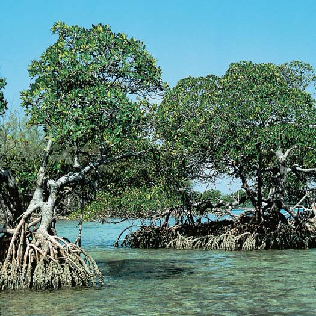

56 Ecología y geografía de la vida
1218
CONCEPTOS CLAVE
56.1 El clima, en particular la temperatura y la precipitación, afecta la distribución de los biomas más importantes de la Tierra, como los bosques lluviosos tropicales y la tundra. 56.2 Los factores abióticos (como salinidad del agua, cantidad de oxígeno disuelto, disponibilidad de minerales esenciales y profundidad del agua) infl uyen en la distribución de organismos en los ecosistemas acuáticos. 56.3 Los ecotonos, áreas de transición donde dos comunidades se encuentran e integran, ofrecen diversas condiciones que alientan la riqueza de especies. 56.4 La Tierra tiene seis reinos biogeográfi cos, cada uno de los cuales consta de grandes masas de tierra separadas por aguas profundas, montañas o un desierto.
L
a Tierra posee muchos ambientes diferentes. La selección natural afecta la capacidad de un organismo para sobrevivir y reproducirse en un ambiente dado. En la selección natural, factores tanto abióticos (inertes) como bióticos (vivientes) eliminan a los individuos menos aptos de una población. Con el tiempo, las generaciones exitosas de organismos que viven en cada bioma o ecosistema acuático fundamental se vuelven mejor adaptadas a las condiciones locales del ambiente. Los perros de la pradera de cola negra están magnífi camente adaptados a su ambiente. Sus dientes y tractos digestivos están modifi cados para comer y digerir con facilidad las semillas y hojas de pasto que crecen profusamente en las grandes llanuras del oeste de Norteamérica. Los perros de la pradera viven en grandes colonias de aproximadamente 500 individuos. Los ojos de cada individuo en la colonia están alertas del peligro potencial y, cuando lo advierten, avisan al resto de la colonia para que se proteja (vea la fotografía). Cuando el peligro acecha, cada perro de la pradera se introduce en su refugio subterráneo. Cada madriguera cuenta por lo menos con dos entradas y consta de una complicada red de largos túneles con varias cámaras; una guardería para los jóvenes, un dormitorio, una cámara de aseo y una cámara de escucha (próxima a una entrada). Pilas de suelo excavado rodean las entradas de la madriguera y ayudan a impedir inundaciones durante la temporada de lluvia. Para sobrevivir al invierno, los perros de la pradera de cola negra hibernan en sus madrigueras. Sus metabolismos se vuelven más lentos
Perro de la pradera de cola negra. Los perros de la pradera ( Cynomys ludovicianus ) nunca se alejan de sus madrigueras, las cuales usan para escapar de los depredadores.
Raymond Gehman/Corbis
Ecología y geografía de la vida 1219
muchos paisajes que interactúan. Recuerde del capítulo 53 que un paisaje es una gran área terrestre (desde algunos hasta muchos kilómetros cuadrados) compuesta por ecosistemas relacionados. Los biomas corresponden en gran medida a zonas climáticas primordiales, donde la temperatura y la precipitación son lo más importante ( FIGURA 56-1 ). Cerca de los polos, la temperatura suele ser el principal factor climático; mientras que en las regiones tropicales y templadas, la precipitación se vuelve más importante que la temperatura. Otros factores abióticos a los que son sensibles los biomas incluyen temperaturas extremas, cambios rápidos de temperatura, inundaciones, sequías, vientos fuertes e incendios (vea la sección sobre incendios en el capítulo 55). En este capítulo se analizan nueve biomas fundamentales: tundra, bosque boreal, bosque lluvioso templado, bosque caducifolio templado, pastizales templados, chaparral, desierto, sabana y bosque lluvioso tropical. Aunque cada bioma se estudia como entidad distinta, los biomas se mezclan unos con otros en sus límites.
La tundra son las llanuras frías y pantanosas del extremo norte
La tundra (también conocida cono tundra ártica ) existe en latitudes nórdicas extremas siempre que la nieve se funde estacionalmente ( FI-
GURA 56-2 ). El hemisferio sur no tiene ningún equivalente de la tundra ártica porque carece de tierra en las latitudes idóneas. Un ecosistema semejante localizado en las elevaciones superiores de las montañas, arriba de la línea de árboles, se denomina tundra alpina para distinguirla de la tundra ártica (vea Preguntas acerca de: La distribución de la vegetación en las montañas ). La tundra ártica tiene largos inviernos crudos y veranos extremadamente cortos. Aunque la estación de crecimiento, con sus temperaturas más cálidas, dura tan poco como 50 días, los días son largos. Por arriba del círculo polar ártico, el Sol no se pone en absoluto durante muchos días en pleno verano, aunque la cantidad de luz a medianoche es sólo la décima parte de la que hay a mediodía. Hay poca precipitación (de 10 a 25 cm al año) sobre la mayor parte de la tundra y la mayoría cae durante los meses de verano.
y subsisten con la grasa almacenada en sus cuerpos. Sin embargo, no hibernan profundamente y pueden abandonar sus madrigueras para buscar alimento cuando el tiempo es cálido. Así como los perros de la pradera, cada especie tiene adaptaciones estructurales, conductuales y fi siológicas para su propio ambiente particular. A medida que se analicen los ecosistemas terrestres y acuáticos más importantes de la Tierra, incluyendo las características de las especies de cada uno, piense en la variedad de adaptaciones que la selección natural ha producido en los organismos en respuesta a sus ambientes particulares.
56.1 BIOMAS
OBJETIVOS DE APRENDIZAJE
1 Defi nir bioma y describir brevemente los nueve biomas terrestres fundamentales, prestando atención al clima, el suelo, y las plantas y animales característicos de cada uno. 2 Describir por lo menos un efecto humano sobre cada uno de los biomas analizados.
Un bioma es una gran región terrestre relativamente distinta que tiene clima, suelo, plantas y animales semejantes sin importar dónde esté. Debido a que abarca una zona geográfi ca tan amplia, un bioma incluye
La distribución de los biomas mundiales es en gran parte producto de patrones climáticos, los cuales determinan el agua de una zona (medida como precipitación) y su energía (medida como temperatura).
100
0
200
300
400
–10 0 10 20 30 Temperatura promedio (°C)
Precipitación promedio anual (cm)
Bosque lluvioso tropical
Bosque seco tropical Bosque caducifolio templado
Bosque boreal Pastizal templado, chaparral
Sabana
Desierto Tundra
Bosque lluvioso templado
FIGURA 56-1 Uso de la precipitación y la temperatura para identifi car biomas Factores como el tipo de suelo, incendios y estacionalidad del clima defi nen si se desarrollan pastizales templados o chaparral. (Adaptado de Whittaker, R. H. Communities and Ecosystems , 2a. ed. Macmillan, Nueva York, 1975).
PUNTO CLAVE
FIGURA 56-2 Tundra ártica Debido a la corta estación de crecimiento y el suelo siempre congelado ( permafrost ) en la tundra ártica, sólo crecen pequeñas plantas duras en el bioma más septentrional que rodea al océano Ártico. Fotografi ado durante el otoño en los Territorios Noroccidentales, Canadá.
© Wild Arctic Pictures/Shutterstock
1220 Capítulo 56
terísticas superfi ciales) y permafrost, producen un paisaje de lagos poco profundos, corrientes lentas y pantanos. La baja riqueza de especies y la baja productividad primaria caracterizan a la tundra. Musgos, líquenes (como musgo del reno), hierbas y juncias similares a hierba dominan la vegetación de la tundra; la mayoría de estas plantas cortas son herbáceas perennes que viven de 20 a 100 años. No crecen árboles o arbustos fácilmente identifi cables, excepto en sitios protegidos, aunque sauces y abedules enanos, y otros árboles de baja altura, son comunes. La vida animal durante todo el año en la tundra incluye topos, comadrejas, zorros árticos, lobos grises, liebres patas de raqueta, perdices nivales, búhos nevados, bueyes almizcleros y lemmings (vea la fi gura 53-5 y el análisis de los ciclos poblacionales de los lemmings en el capítulo 53). En el verano, los caribús migran al norte hacia la tundra para
Los suelos de la tundra tienden a ser geológicamente jóvenes porque la mayoría se formó sólo después de la edad de hielo. 1 Estos suelos suelen ser pobres en nutrientes y tienen poco mantillo orgánico (hojas y tallos muertos, excrementos de animales y restos de organismos) en la capa superior del suelo. Aunque la superfi cie del suelo se derrite durante el verano, la tundra tiene una capa de suelo congelado permanentemente denominado permafrost que varía en profundidad y espesor. Debido a que el permafrost interfi ere con el drenaje, la parte superior descongelada del suelo suele estar anegada durante el verano. Precipitaciones limitadas, combinadas con bajas temperaturas, topografía plana (carac-
1 El hielo glaciar, que ocupaba alrededor de 30% de la tierra del planeta durante la última glaciación, comenzó a retirarse hace aproximadamente 17,000 años. Hoy, este hielo ocupa alrededor de 10% de la superfi cie terrestre.
¿El tipo de vegetación cambia a diferentes elevaciones en las montañas? Ir de excursión a una montaña es semejante a viajar hacia el Polo Norte en lo que respecta a las zonas principales de la vida encontradas (vea la fi gura). Esta semejanza elevación-latitud ocurre porque la temperatura desciende a medida que se asciende una montaña, justo como lo hace cuando uno se desplaza hacia el norte; la temperatura desciende aproximadamente 6 °C con cada incremento de 1000 m en la elevación. Los tipos de especies que crecen sobre la montaña cambian con la variación de temperatura. Por ejemplo, los árboles caducifolios, que pierden sus hojas cada otoño, pueden cubrir la base de una montaña en Colorado. A elevaciones superiores, donde el clima es más frío y más severo, crece un bosque subalpino de coníferas semejante a un bosque boreal. Ahí, los árboles dominantes son piceas y abetos. Todavía más arriba, el bosque se adelgaza y los árboles se vuelven más pequeños, nudosos y semejantes a arbustos. Estos árboles torcidos, como arbustos, denominados krummholz (una palabra alemana que signifi ca “madera torcida”), se encuentran en su límite de elevación (la línea de árboles ). La elevación exacta a la cual se presenta la línea de árboles depende de la latitud y la distancia hacia el océano. En las Montañas Rocosas, entre 35º y 50º de latitud norte, la línea de árboles baja 100 m con cada grado de latitud norte. Por arriba de la línea de árboles, donde el clima es bastante frío, existe un tipo de tundra, con vegetación compuesta por hierba, juncias y pequeñas plantas tupidas, la mayoría de las cuales son perennes. Algunas plantas alpinas (por ejemplo, ranúnculos) son especies de tierras bajas adaptadas al ambiente alpino, mientras otras plantas (por ejemplo, la douglasia de montaña) viven exclusivamente en las montañas. Esta tundra
se denomina tundra alpina para distinguirla de la tundra ártica. En la cima de la montaña podría haber una capa permanente de hielo o nieve, semejante a las áreas polares vecinas sin vida. Entre las grandes elevaciones y las altas latitudes existen importantes diferencias ambientales que afectan los tipos de organismos que se encuentran en cada lugar. La tundra alpina suele carecer de permafrost y recibe más precipitación que la tundra ártica. Las
altas elevaciones de las montañas templadas no tienen los grandes extremos de duración del día que están asociados con el cambio de estaciones en los biomas a grandes latitudes. La intensidad de la radiación solar es mayor a grandes elevaciones que a altas latitudes. A grandes elevaciones, los rayos del Sol pasan por menos atmósfera, lo cual resulta en mayor exposición a la radiación ultravioleta (menos radiación es fi ltrada por la atmósfera) que en las latitudes altas.
Preguntas acerca de
LA DISTRIBUCIÓN DE LA VEGETACIÓN EN LAS MONTAÑAS
Comparación de zonas de elevación y latitud. Las temperaturas frías en las partes más altas de una montaña producen una serie de ecosistemas similares a aquellos que se encuentran al desplazarse hacia el Polo Norte.
ZONAS DE ELEVACIÓN
Gran elevación
Nieve-hielo
Tundra alpina
Bosque subalpino de coníferas
Baja elevación
Bosque caducifolio
ZONAS DE LATITUD
Polo Norte
Región polar
Tundra ártica
Bosque boreal
Latitudes medias
Bosque templado
Ecología y geografía de la vida 1221
ben agua porque el suelo está congelado. La selección natural también favorece a las coníferas en el bosque boreal porque, al ser siempre verdes, reanudan la fotosíntesis tan pronto como vuelven las temperaturas más cálidas. La vida animal del bosque boreal incluye algunas especies más grandes, como el caribú (que migra de la tundra al bosque boreal en el invierno), lobos, osos y alces. Sin embargo, la mayoría de la vida animal es de tamaño medio e incluye roedores, conejos y depredadores con pieles apreciadas, como linces, martas y visones. La mayoría de las especies de aves son abundantes estacionalmente, pero migran a climas más cálidos en el invierno. Los insectos son numerosos, pero hay pocos anfi bios y reptiles, excepto en el bosque boreal del sur. La mayor parte del bosque boreal no es adecuada para la agricultura debido a su corta temporada de crecimiento y el suelo pobre en minerales. El bosque boreal, que explotado principalmente mediante la tala indicriminada, suele ser en la actualidad la principal fuente de madera industrial y fi bra de madera del mundo.
El bosque lluvioso templado tiene clima más frío, neblina densa y alta precipitación
El bosque lluvioso templado de coníferas crece en la costa noroccidental de Norteamérica. Vegetación semejante existe en el sureste de Australia y en el suroeste de América del Sur. La precipitación anual en este bioma es alta, de 200 a 380 cm; la condensación del agua de la densa neblina costera aumenta la precipitación anual. La proximidad del bosque lluvioso templado a la costa modera la temperatura, de modo que la fl uctuación estacional es estrecha; los inviernos son suaves y los veranos son fríos. El bosque lluvioso templado tiene un suelo relativamente pobre en nutrientes, aunque su contenido orgánico puede ser alto. Las bajas temperaturas aminoran la actividad de los desintegradores bacterianos y fúngicos. Así, las agujas y grandes ramas y troncos caídos se acumulan en el suelo como mantillo que requiere muchos años para descomponerse y liberar minerales inorgánicos en el suelo. El tipo de vegetación dominante en el bosque lluvioso templado norteamericano consta de árboles siempre verdes, como el pinabete occidental, abeto Douglas, abeto Sitka y cedro rojo occidental. El bosque lluvioso templado es rico en vegetación epifi ta, que consta de plantas más pequeñas que crecen de manera no parásita sobre los troncos y ramas de árboles grandes ( FIGURA 56-4 ). Las epifi tas en este bioma son principalmente musgos, líquenes y helechos, todos los cuales también forman una alfombra en el suelo. Ardillas, ratas de la madera, venado bura, alce, numerosas especies de aves (como arrendajos, trepadores, carboneros), varias especies de reptiles (como tortugas pintadas y culebras terrestres occidentales) y anfi bios (como salamandras gigantes del Pacífi co y ranas arbóreas) son animales comunes en el bosque lluvioso templado. El bosque lluvioso templado, uno de los más ricos productores de madera en el mundo, es el abastecedor de madera aserrada y pulpa de madera. También es uno de los ecosistemas más complejos en términos de riqueza de especies. Debe tenerse cuidado para evitar la explotación excesiva de antiguos bosques templados porque un ecosistema así requiere cientos de años para desarrollarse. Cuando la industria maderera tala antiguos bosques originales, suele reforestar el área con monocultivos (una sola especie) de árboles que tala en ciclos de 40 a 100 años. Así, una vez que se tala el ecosistema de antiguos bosques templados, jamás tiene oportunidad de volver a desarrollarse. Una pequeña fracción del antiguo bosque templado original en Washington, Oregon y el norte de California permanece incólume. Estos ecosistemas forestales estables constituyen un hábitat biológico para muchos organismos, incluidas 40 especies en peligro y amenazadas.
pastar las juncias, hierbas y sauces enanos. Docenas de especies de aves también migran hacia el norte en verano para anidar y alimentarse de abundantes insectos. Mosquitos, moscas negras y tábanos sobreviven el invierno como huevecillos o pupas y existen en grandes cantidades durante las semanas estivales. La tundra se regenera con bastante lentitud después de que ha sido perturbada. Inclusive el uso casual por excursionistas provoca daños. Lesiones a largo plazo, que quizá persistan durante cientos de años, han sido ocasionadas a grandes porciones de la tundra ártica como resultado de exploración petrolera y uso militar.
El bosque boreal es el bosque siempre verde del norte
Justo al sur de la tundra se encuentra el bosque boreal , o taiga , que se extiende desde Norteamérica hasta Eurasia. El bosque boreal es el bioma más grande del planeta, que abarca aproximadamente 11% de la superfi cie de la Tierra ( FIGURA 56-3 ). En el hemisferio sur no se encuentra ningún bioma similar al bosque boreal porque ahí no hay tierra en las latitudes correspondientes. Los inviernos son extremadamente fríos y crudos, aunque no tanto como en la tundra. El bosque boreal recibe poca precipitación, quizá 50 cm al año, y su suelo suele ser ácido, bajo en minerales (nutrientes inorgánicos) y su superfi cie está cubierta por una profunda capa de agujas de coníferas parcialmente descompuestas. (Las coníferas son plantas perennes que producen piñas). El bosque boreal contiene numerosos estanques y lagos en depresiones llenas de agua que cavaron afi ladas capas de hielo durante la última glaciación. Piceas, abeto de bálsamo, alerce oriental y otra coníferas dominan el bosque boreal, aunque árboles caducifolios , como el álamo o el abedul, que pierden sus hojas en otoño, forman sitios sorprendentes. Las coníferas poseen muchas adaptaciones para resistir la sequía, como hojas en forma de agujas con un área mínima para reducir la pérdida de agua (vea la fi gura 34-9). Estas adaptaciones permiten a las coníferas resistir la “sequía” de los meses invernales del norte, cuando las raíces no absor-
FIGURA 56-3 Bosque boreal El bosque boreal, constituido por coníferas, existe en regiones frías del hemisferio norte adyacentes a la tundra. Fotografi ado en Yukón, Canadá.
© Pilens/Dreamstime
1222 Capítulo 56
menudo se encuentran en estado seminatural; es decir, altamente modifi cados por los humanos para recreación, forrajeo de ganado, producción de madera y otros usos. Aunque estos bosques restituidos no cuentan con la diversidad biológica de los terrenos vírgenes, muchos organismos del bosque se han reestablecido con éxito. En todo el mundo, el bosque caducifolio templado estaba entre los primeros biomas que fueron transformados para uso agrícola. En Europa y Asia, muchos suelos que originalmente mantenían bosque caducifolio templado han sido cultivados con métodos agrícolas tradicionales durante miles de años sin una pérdida sustancial de su fertilidad. Sin embargo, durante el siglo xx fueron adoptadas prácticas agrícolas de cultivo intensivo; éstas, a su vez, junto con el pastoreo excesivo y la deforestación, han contribuido a la degradación de algunas tierras agrícolas.
Los pastizales templados existen en áreas de precipitación moderada
Los veranos son calientes, los inviernos son fríos, los incendios ayudan a conformar el paisaje y la lluvia a menudo es incierta en los pastizales templados . La precipitación anual promedio es de 25 a 75 cm. En las praderas con menos precipitación, los minerales tienden a acumularse en una cubierta marcada justo debajo del nivel del suelo. Estos minerales tienden a lixiviarse del suelo en áreas con más precipitación. El suelo de las praderas contiene considerable material orgánico porque las partes superfi ciales de muchas hierbas mueren cada invierno y contribuyen al contenido orgánico del suelo (las raíces y rizomas sobreviven bajo tierra). Muchas hierbas son formadores de césped; sus raíces y rizomas forman una estera subterránea espesa y continua.
El bosque caducifolio templado tiene un dosel de árboles de hoja ancha
La estacionalidad (veranos calientes e inviernos fríos) es característica del bosque caducifolio templado , que se encuentra en zonas templadas donde la precipitación varía aproximadamente de 75 a 126 cm al año. En términos generales, el suelo de un bosque caducifolio templado consta de suelo superfi cial rico en materia orgánica y una profunda capa inferior rica en barro. A medida que la materia orgánica se descompone, se liberan iones minerales. Si las raíces de los árboles vivos no absorben estos iones, se fi ltran hacia el barro, donde pueden ser retenidos. Árboles de madera dura y hoja ancha, como el roble, el nogal, el arce y la haya, que pierden su follaje cada año, dominan los bosques caducifolios templados del noroeste y el Atlántico medio de Estados Unidos ( FIGURA 56-5 ). Los árboles del bosque caducifolio templado forman un denso dosel que se superpone a árboles jóvenes y arbustos. Los bosques caducifolios templados contenían originalmente una variedad de mamíferos como pumas, lobos, bisontes y otras especies ahora extintas en ciertas regiones, más ciervos, osos y muchos mamíferos y aves pequeños (como pavos silvestres, arrendajos y tangaras escarlatas). Abundaban los reptiles (como tortugas de caja y culebras ratoneras) y los anfi bios (como salamandras manchadas y ranas de la madera), junto con una gama de insectos más densa y variada de la que existe actualmente. En Europa y Norteamérica, la tala y el desmonte de tierras para granjas, plantaciones forestales y ciudades ha eliminado mucho del bosque caducifolio templado. En donde se han regenerado, estos bosques a
FIGURA 56-4 Bosque lluvioso templado Grandes cantidades de precipitación caracterizan el bosque lluvioso templado. Observe las epifi tas suspendidas de las ramas de los árboles coníferos. Fotografi ado en el Parque Nacional Olympic en el estado de Washington.
Terry DonnellyDembinsky Photo Associates
FIGURA 56-5 Bosque caducifolio templado Los árboles de hojas anchas que predominan en el bosque caducifolio templado pierden sus hojas antes del invierno. Fotografi ado durante el otoño en Pennsylvania.
Barbara Miller/Biological Photo Service
Ecología y geografía de la vida 1223
occidente de Australia, partes de Chile y Sudáfrica. En el sur de California este ambiente se denomina chaparral . Este tipo de vegetación también se conoce como maquis en la región del Mediterráneo, matorral mallee en Australia, matorral en Chile y matorral del Cabo en África. El suelo del chaparral es delgado e infértil. En este ambiente a menudo ocurren incendios naturales, en particular a fi nes del verano y otoño. La vegetación del chaparral se ve sorprendentemente parecida en distintas áreas del mundo, aun cuando las especies individuales sean bastante diferentes. Un crecimiento denso de arbustos perennifolios, a menudo de pino resistente a la sequía o arbustos de roble, domina el chaparral ( FIGURA 56-7 ). Durante la estación de lluvia en invierno el paisaje puede ser exuberante y verde, pero durante el seco verano caliente, las plantas están latentes. Los árboles y arbustos a menudo tienen duras hojas coriáceas que resisten la pérdida de agua. Muchas plantas están adaptadas al fuego y crecen mejor en los meses siguientes a un incendio. Este crecimiento es posible porque el fuego libera minerales que estaban fi jos en las plantas quemadas. Con la nueva disponibilidad de minerales esenciales, las plantas brotan vigorosamente durante las lluvias invernales. Venados bura, ratas de la madera, conejos de matorral, lisas y otras lagartijas, así como muchas especies de aves (como ruiseñores, arrendajos y paros) son animales comunes en el chaparral. Los incendios, que ocurren a intervalos irregulares en la vegetación del chaparral californiano, a menudo son bastante costosos porque consumen casas lujosas construidas en el paisaje de las colinas del chaparral. Por desgracia, los esfuerzos para controlar los incendios naturales algunas veces son contraproducentes. La vegetación más densa y espesa tiende a acumularse cuando se evitan los incendios periódicos; luego, cuando ocurre un incendio, es mucho más grave. La eliminación de la
Los húmedos pastizales tem plados, también conocidos como praderas de pastos altos existen en Estados Unidos en Iowa, el oeste de Minnesota, el este de Nebraska y a lo largo de las provincias de las planicies canadienses. Aunque crecen pocos árboles excepto cerca de ríos y corrientes, los pastos, algunos hasta de 2 m de altura crecen con gran profusión en el profundo y rico suelo ( FIGURA 56-6 ). Antes que la mayor parte de esta zona fuese transformada en tierra cultivable, estaba poblada por manadas de animales que pacían, en particular bisontes. Los depredadores más importantes eran lobos, aunque en áreas más ralas y secas, los coyotes tomaron su lugar. Fauna más pequeña incluía perros de la pradera y sus depredadores (zorros, hurones de patas negras y aves de presa como halcones de la pradera), sabaneros occidentales, charlatanes, reptiles (serpientes de tierra, lagartos de cuernos cortos) y gran cantidad de insectos. Las praderas de pastos cortos, donde los pastos dominantes miden menos de 0.5 m de alto, son pastizales templados que reciben menos precipitación que las praderas más húmedas recién descritas pero más precipitación que los desiertos. En Estados Unidos, las praderas de pastos cortos existen en la mitad oriental de Montana, la mitad occidental de Dakota del Sur y partes de otros estados del medio oeste, así como en el oeste de Alberta, en Canadá. Las plantas crecen con menor abundancia que en las praderas más húmedas y ocasionalmente se ven expuestos algunos suelos desnudos. La pradera norteamericana, en particular la pradera de pastos largos, era tan idónea para la agricultura que queda poco de ella. Más de 90% desapareció bajo el arado y el resto está tan fragmentada, que casi nada puede ver ni siquiera una aproximación de lo que los colonos europeos observaron cuando se asentaron en el medio oeste. Hoy, la pradera de pastos largos se considera el bioma más raro de Norteamérica. En décadas recientes, arbustos leñosos y árboles pequeños como el enebro han invadido muchos de los pastizales mundiales en Norte y Sudamérica, África y Australia. Estas plantas desplazan a los pastos nativos, reduciendo la cantidad de comida disponible para los animales de pastoreo. Los incendios en estos ecosistemas alterados son más catastrófi cos y las profundas raíces de estas plantas invasivas absorben el agua, alterando la hidrología de la zona. Los científi cos no están seguros de por qué está ocurriendo este cambio, aunque sugieren que el cambio de clima, el aumento de sequías, el pastoreo excesivo y la eliminación de incendios también podrían ser factores de peso en esta situación.
El chaparral es un matorral de arbustos de hojas perennes y árboles pequeños
Algunos ambientes templados con colinas tienen inviernos suaves con lluvia abundante, combinados con veranos extremadamente secos. Estos climas mediterráneos, como son conocidos, ocurren no sólo en la región alrededor del mar Mediterráneo, sino también en California, el
FIGURA 56-6 Pastizal templado La Nature Conservancy posee esta reserva de pradera de pastos altos en Oklahoma. Así como otros pastizales templados húmedos, en esencia carece de árboles, aunque contiene una profusión de pastos y otras plantas herbáceas que fl orecen. A medida que los bisontes pacen las plantas, afectan la estructura y diversidad de la comunidad.
Harvey Payne
1224 Capítulo 56
y estados vecinos es frío y está dominado por la artemisa. El desierto Mojave en Nevada y California es cálido y conocido por sus árboles de Joshua (un tipo de yuca con un tallo leñoso erecto). El desierto de Chihuahua, hogar de plantas centenarias (agaves; vea la fi gura 53-7) es cálido y se encuentra en Texas, Nuevo México y México. El desierto cálido de Sonora, con sus numerosas especies de cactus, se encuentra en Arizona, California y México ( FIGURA 56-8 ). El menor contenido de vapor de agua de la atmósfera del desierto lleva a temperaturas extremas de calor y frío cada día, de modo que en cada período de 24 horas ocurre un cambio importante de temperatura. Los desiertos varían bastante dependiendo de la cantidad de precipitación que reciben, que suele ser menor que 25 cm al año. Algunos desiertos son tan secos que virtualmente no hay vida vegetal en ellos. Como resultado de la escasez de vegetación, el suelo del desierto es bajo en materia orgánica aunque a menudo su contenido de minerales es alto, en particular de las sales NaCl, CaCO 3 y CaSO 4 . La vegetación desértica incluye perennifolias (cactus, yuca, árboles de Joshua y artemisas) y, después de una lluvia, plantas que fl orecen anualmente. La vegetación del desierto tiende a tener pocas hojas o ninguna, una adaptación para conservar el agua. Por ejemplo, en cactus como el saguaro gigante, el tallo lleva a cabo la fotosíntesis y también se expande en forma de acordeón para almacenar agua; las hojas están modifi cadas en espinas, lo cual desalienta a los herbívoros. Otras plantas del desierto pierden sus hojas casi todo el año y crecen sólo durante la breve estación húmeda.
vegetación del chaparral, cuyas raíces mantienen el suelo en su lugar, también ocasiona problemas; lo atestiguan los deslizamientos de fango que a veces ocurren durante las lluvias invernales en estas áreas.
Los desiertos son ecosistemas áridos
Los desiertos son áreas secas que se encuentran en regiones templadas ( desiertos fr íos ) y subtropicales ( desiertos cálidos ). Norteamérica tiene cuatro tipos de desiertos. El desierto de la Gran Cuenca en Nevada, Utah
FIGURA 56-7 Chaparral El chaparral, que consta primordialmente de matorrales y árboles pequeños resistentes a la sequía, se desarrolla en sitios donde los veranos secos se alternan con inviernos lluviosos suaves. Fotografi ado en las montañas Santa Lucía, California.
Edward Ely/Biological Photo Service
FIGURA 56-8 Desierto La lluvia de verano caracteriza los desiertos más cálidos de América del Norte, como el desierto de Sonora que se muestra. El desierto de Sonora contiene muchas especies de cactus, incluyendo el gran saguaro ( Carnegiea gigantea ) semejante a un árbol, que crece de 15 a 18 m de altura. Fotografi ado en Arizona.
© Boney 23/Dreamstime
▲
Ecología y geografía de la vida 1225
Árboles como la Acacia sp. están erizados de espinas que les proporcionan protección contra los herbívoros. Tanto árboles como pastos poseen características adaptadas al fuego, como amplios sistemas de raíces subterráneas que les permiten sobrevivir a sequías estacionales, así como a incendios periódicos que se extienden por la sabana. El conjunto más grande de animales de pezuña se encuentra en la sabana africana. Ahí viven grandes manadas de herbívoros, entre ellos ñus, antílopes, jirafas, cebras y elefantes. Grandes depredadores, como leones y hienas, matan y limpian las manadas. En zonas de lluvia que varía de manera estacional, las manadas y sus depredadores pueden migrar cada año. La sabana está siendo transformada rápidamente en pastizales para ganado y otros animales domesticados que están reemplazando a las grandes manadas de animales salvajes. El problema es particularmente grave en África, que cuenta con la población humana de mayor crecimiento que cualquier continente. En algunos sitios el apacentamiento excesivo de parte de animales domésticos ha contribuido a la conversión de la sabana marginal en desierto, un proceso conocido como desertifi cación . En ésta, la reducción en la cubierta de hierba ocasionada por el pastoreo excesivo permite que el viento y el agua erosionen el suelo; la erosión remueve la parte superior del suelo y disminuye su capacidad para mantener cultivos o ganado. (La desertifi cación no está restringida a la sabana. Los pastizales templados y los bosques secos tropicales también pueden ser degradados a desierto).
Hay dos tipos básicos de bosques tropicales
Hay muchos tipos de bosques tropicales, pero los ecólogos suelen clasifi carlos en dos tipos: bosques secos tropicales o bosques lluviosos tropicales. Los bosques secos tropicales existen en regiones con una estación húmeda y una estación seca (por lo general dos o tres meses al año). La precipitación anual es de 150 a 200 cm. Durante la estación
Los animales del desierto tienden a ser pequeños. Durante el calor del día permanecen bajo cubierta o regresan a su refugio de manera periódica, mientras en la noche salen para forrajear o cazar. Además de insectos adaptados al desierto, hay muchos reptiles desérticos especializados (como iguanas y tortugas de desierto, así como serpientes de cascabel) y algunos anfi bios adaptados al desierto (como sapos de espuelas occidentales). Algunos mamíferos incluyen roedores como la rata canguro americana, que no bebe agua, ya que subsiste solamente del contenido de agua de su comida (principalmente semillas e insectos). Los desiertos americanos también son el hogar de liebres y los canguros viven en los desiertos australianos. Carnívoros como el zorro fennec africano y algunas aves de presa, especialmente búhos, viven de roedores y conejos. Durante los meses más secos del año, muchos insectos del desierto, anfi bios, reptiles y mamíferos elaboran túneles, donde permanecen inactivos; este período de reposo vegetativo se conoce como estivación . Los humanos han alterado los desiertos norteamericanos de varias maneras. Vehículos para todo terreno dañan la vegetación del desierto, que algunas veces tarda varios años en recuperarse. Cuando la capa superior del suelo del desierto es perturbada, la erosión ocurre con mayor facilidad y crece menos vegetación para mantener a los animales nativos. Otro problema es que algunos cactus y tortugas del desierto se han vuelto raros como resultado de la caza furtiva. Casas, fábricas y ranchos construidos en áreas desérticas requieren de vastas cantidades de agua, que debe ser importada de zonas distantes. La irrigación de los suelos del desierto a menudo hace que se vuelvan salados e inadecuados para los cultivos o la vegetación nativa. El aumento del consumo de agua subterránea por muchas ciudades del desierto ha provocado el descenso de los niveles de aquélla. El agotamiento de los acuíferos en los desiertos de Estados Unidos es particularmente crítico en el sur de Arizona y en el oeste de Nuevo México.
La sabana es una pradera tropical con árboles dispersos
El bioma sabana es una pradera tropical con grupos bastante diseminados de árboles bajos ( FIGURA
56-9 ). La sabana se encuentra en zonas de lluvia relativamente baja o estacional con prolongados períodos secos. Las temperaturas en la sabana varían poco a lo largo del año y es la precipitación, no la temperatura, como en las praderas, la que regula las estaciones. La precipitación anual es de 85 a 150 cm. El suelo de la sabana es pobre en minerales esenciales, en parte porque es muy lixiviado. El suelo de la sabana a menudo es rico en aluminio, que resiste la fi ltración, y en algunos sitios alcanza niveles que son tóxicos para muchas plantas. Aunque la sabana africana es la que mejor se conoce, también existen sabanas en Sudamérica y el norte de Australia. Grandes extensiones de pastos interrumpidos por árboles oca sionales caracterizan la sabana.
FIGURA 56-9 Sabana En esta fotografía de la sabana africana en Tanzania, los animales más pequeños en el suelo son gacelas de Thomson ( Gazella thomsonii ), y los más grandes cerca de los árboles son ñus ( Connochaetes taurinus ).
Carlyn Iverson
1226 Capítulo 56
desintegran el mantillo orgánico con bastante rapidez. Grandes redes de raíces y micorrizas absorben con rapidez los minerales de la materia descompuesta. Así, los minerales de los bosques lluviosos tropicales están relacionados con la vegetación, en lugar de con el suelo. Los bosques lluviosos tropicales se encuentran en América Central y Sudamérica, África y el sureste de Asia. El bosque lluvioso tropical es muy productivo, a pesar de la escasez de minerales en el suelo. Sus plantas, estimuladas por abundante energía solar y precipitación, capturan considerable energía por fotosíntesis. De todos estos biomas, el bosque lluvioso tropical no tiene parangón en riqueza de especies. La mayoría de los árboles del bosque lluvioso tropical son plantas siempre verdes que fl orecen. Un bosque lluvioso tropical completamente desarrollado posee varios niveles de vegetación ( FIGURA 56-10 ). El piso superior, denominado capa emergente , consta de la copa de los árboles más antiguos y altos, que miden aproximadamente 40 m o más de altura; estos árboles están expuestos a la luz solar directa y están sometidos a las temperaturas más calientes, humedades más bajas y vientos
seca, muchos árboles tropicales pierden sus hojas y permanecen latentes, así como lo hacen los árboles de clima templado en el invierno. India, Brasil, Tailandia y México son algunos de los países que tienen bosques tropicales. Los bosques secos tropicales se entremezclan con la sabana en sus límites secos y con los bosques lluviosos tropicales en sus límites húmedos. La deforestación y el apacentamiento excesivo por animales domésticos han fragmentado y degradado muchos bosques secos tropicales. La precipitación anual de los bosques lluviosos tropicales es de 200 a 450 cm al año. La mayor parte de esta precipitación, que ocurre casi a diario, proviene de agua reciclada localmente que entra en la atmósfera por la transpiración de los propios árboles del bosque. Los bosques lluviosos tropicales a menudo se ubican en zonas con suelo antiguo, bastante erosionado y pobre en minerales. Poca materia orgánica se acumula en estos suelos. Debido a que las temperaturas son elevadas y la humedad del suelo es abundante todo el año, hormigas y termitas que se alimentan de organismos descompuestos y detritos animales
Altura (metros)
0
5
10
15
20
25
30
35
40
45
Capa emergente Águila arpía
Tucán toco
Zarigüeya lanuda
Tapir brasileño
Grallaria de corona negra
Dosel
Sotobosque
Capa de matorral
Capa de suelo
FIGURA 56-10 Bosque lluvioso tropical La vegetación del bosque lluvioso tropical está estratifi cada. Excepto en las riberas de los ríos, el bosque lluvioso tropical tiene un dosel cerrado que permite el paso de poca luz al piso del bosque. Los animales resaltados en esta fi gura ocupan una variedad de nichos ecológicos en el bosque lluvioso tropical. (Adaptado de Miller, G. T. Living in the Environment , 16a. ed. Cengage/Brooks Cole, Belmont, CA, 2007, p. 156, fi gura 7-17).
Ecología y geografía de la vida 1227
(como los colibríes y los pájaros del Sol) y otras que consumen insectos. La mayoría de los mamíferos del bosque lluvioso tropical, como perezosos y monos, viven sólo en los árboles y nunca bajan al suelo. En los bosques lluviosos tropicales también se encuentran algunos mamíferos grandes que viven en el suelo, incluidos los elefantes. A menos que en breve se tomen fuertes medidas de conservación, el crecimiento de la población humana y la expansión agrícola e industrial en los países tropicales puede decretar el fi n de los bosques lluviosos tropicales a mediados del siglo xxii. Muchas especies de los bosques lluviosos pueden extinguirse incluso antes de haber sido identifi cadas y descritas científi camente. (La destrucción del bosque lluvioso tropical se analiza con detalle en el capítulo 57). Como repaso, analice la FIGURA 56-11 , que muestra la distribución geográfi ca de los biomas mundiales.
Repaso
■ ¿Qué factores climáticos y del suelo producen los biomas más importantes?
■ ¿Qué organismos representativos se encuentran en cada uno de estos biomas boscosos?: (1) bosque boreal, (2) bosque caducifolio templado, (3) bosque lluvioso templado, (4) bosque lluvioso tropical
■ ¿En qué bioma vive el lector? ¿Coincide con la descripción proporcionada en este texto? En caso negativo, explique la discrepancia.
■ ¿Cómo es la tundra comparada con el desierto? ¿Cómo es la pradera comparada con la sabana?
más intensos. El piso siguiente, el dosel, alcanza una altura de 30 a 35 m y permite el paso de poca luz solar para el sostén del ralo sotobosque , la capa de matorrales y la capa de suelo, todas las cuales constan de plantas más pequeñas especializadas para vivir en la sombra así como de plántulas de árboles más altos. La vegetación de los bosques tropicales húmedos no suele ser densa a nivel del suelo, excepto cerca de las riberas de corrientes o donde algún árbol caído ha abierto el dosel. Los árboles de los bosques lluviosos tropicales mantienen grandes comunidades epifi tas de plantas más pequeñas como orquídeas y bromelias. Aunque las epifi tas crecen en la unión de la rama con el tronco, en la corteza e incluso sobre las hojas de sus huéspedes, la mayoría usa al árbol huésped sólo como soporte físico, no como alimento. Debido a que poca luz penetra al sotobosque, muchas plantas que viven ahí están adaptadas para ascender sobre los árboles huéspedes ya establecidos. Las lianas (viñas tropicales leñosas), algunas tan gruesas como un muslo humano, se enroscan alrededor de las ramas de los árboles de los bosques lluviosos tropicales. Una vez en el dosel, las lianas crecen a partir de las ramas superiores de un árbol a otro, conectando las copas de los árboles y proporcionando una vía para muchos de los residentes del dosel. Sin contar las bacterias y otros organismos que viven en el suelo, aproximadamente 90% de los organismos de los bosques lluviosos tropicales viven en los doseles medio y superior. Los animales del bosque lluvioso tropical incluyen la fauna más variada y abundante de insectos, reptiles y anfi bios sobre la Tierra. Las aves, también, son variadas, con algunas especializadas en consumir frutas (como los pericos), néctar
Montañas altas
Trópico de Cáncer
Ecuador
Trópico de Capricornio
Hielo polar
Tundra
Pastizal templado
Sabana
Chaparral
Bosque boreal
Bosque caducifolio templado (incluye el bosque lluvioso templado)
Bosque seco tropical y bosque lluvioso tropical
Desierto
FIGURA 56-11 Animada Los biomas mundiales más importantes Este diagrama simplifi cado muestra límites nítidos entre los biomas. Los biomas en realidad se entremezclan en sus límites, algunas a lo largo de grandes áreas. Observe que las montañas están identifi cadas por separado porque tienen vegetación variable. (Adaptado de Miller, G. T. Living in the Environment , 16a. ed. Cengage/Brooks Cole, Belmont, CA, 2007, p. 146, fi gura 7-8).
1228 Capítulo 56
precipitación que fl uye como escurrimiento superfi cial hacia el océano (vea el análisis del ciclo hidrológico en el capítulo 55). Los hábitats de agua dulce también proporcionan hogar para muchas especies.
Las corrientes y los ríos son ecosistemas de corrientes de agua
A lo largo de la longitud de una corriente o río hay muchas condiciones diferentes ( FIGURA 56-12 ). La naturaleza del ecosistema de corrientes de agua cambia bastante desde su fuente (el sitio donde empieza) hasta su desembocadura (donde se vacía en otro cuerpo de agua). Las cabeceras de los ríos (pequeñas corrientes que son las fuentes de un río) suelen
56.2 ECOSISTEMAS ACUÁTICOS
OBJETIVOS DE APRENDIZAJE
3 Explicar los factores ambientales importantes que afectan los ecosistemas acuáticos. 4 Distinguir entre plancton, necton y bentos. 5 Describir brevemente los diversos ecosistemas de agua dulce, de estuario y marinos, prestando atención a las características ambientales y organismos representativos de cada uno. 6 Describir por lo menos un efecto humano sobre cada uno de los ecosistemas acuáticos analizados.
Los “biomas” acuáticos no existen, en el sentido de que los ecólogos acuáticos no distinguen los ecosistemas acuáticos con base en la forma de vegetación dominante. Los ecosistemas acuáticos se clasifi can primordialmente con base en factores abióticos, como la salinidad, que ayuda a determinar las fronteras de una zona de vida acuática. La salinidad , la concentración de sales disueltas en un cuerpo de agua, afecta los tipos de organismos presentes en los ecosistemas acuáticos, así como lo hace la cantidad de oxígeno disuelto. El agua interfi ere en gran medida con la penetración de la luz, de modo que los organismos acuáticos fl otantes que realizan la función fotosintética permanecen cerca de la superfi cie del agua y la vegetación sujeta al fondo crece sólo en aguas poco profundas. Además, los bajos niveles de minerales esenciales a menudo limitan el número y la distribución de los organismos en ciertos ambientes acuáticos. Otros determinantes abióticos de la composición de especies en ecosistemas acuáticos incluyen: profundidad del agua, temperatura, pH y presencia o ausencia de olas y corrientes. Los ecosistemas acuáticos contienen tres categorías ecológicas fundamentales de organismos: plancton que fl ota con libertad, necton que nada con intensidad y bentos que se desplaza en el fondo. El plancton suele estar formado por organismos pequeños o microscópicos que son nadadores relativamente débiles. La mayoría del plancton es llevado a la deriva por las corrientes y olas. Es incapaz de nadar lejos en dirección horizontal, pero algunas especies son capaces de realizar largas migraciones verticales, por lo que se encuentran a diferentes profundidades del agua en distintos momentos del día o en estaciones diferentes. El plancton suele dividirse en dos categorías principales: fi toplancton y zooplancton. El fi toplancton (bacterias fotosintéticas y algas de fl otación libre) son productores que forman la base de la mayoría de las redes alimentarias acuáticas. El zooplancton son organismos no fotosintéticos que incluyen protozoos, crustáceos minúsculos y las etapas larvarias de muchos animales. El necton son organismos más grandes que nadan activamente, como peces, tortugas y ballenas. El bentos son organismos que habitan en el fondo del mar que se fi jan en un punto (esponjas, ostras y centollas), se refugian en la arena (muchos gusanos y equinodermos), o caminan o nadan sobre la superfi cie (langostas, larvas de insectos acuáticos y estrellas de mar).
Los ecosistemas de agua dulce están ligados a la tierra y a los ecosistemas marinos
Los ecosistemas de agua dulce incluyen corrientes y ríos (ecosistemas de corrientes de agua), estanques y lagos (ecosistemas de agua estancada), y marismas y pantanos (humedales de agua dulce). Cada tipo de ecosistema de agua dulce posee sus propias condiciones abióticas específi cas y organismos característicos. Aunque los ecosistemas de agua dulce ocupan una porción relativamente pequeña, alrededor de 2%, de la superfi cie terrestre, son importantes en el ciclo hidrológico: ayudan a reciclar la
Cabecera
Fuente
Afluentes
Llanura de inundación
Meandros
Marisma salina
Desembocadura
Delta
Océano
Cascada
Rápidos
FIGURA 56-12 Características de un río típico El río empieza en una fuente, a menudo en la parte alta de las montañas y es alimentado por nieves o glaciares que se derriten. Las cabeceras fl uyen hacia abajo con rapidez, a menudo sobre rocas (como rápidos) o riscos (como cascadas). A lo largo de su camino, los afl uentes alimentan el río. A medida que el río se nivela, fl uye más lentamente y oscila de un lado a otro, formando meandros. La llanura de inundación es la zona a ambos lados del río susceptible de inundación. Cerca del océano, el cauce del río forma una marisma salina donde se mezclan el agua dulce del río y el agua salada del mar. Los sedimentos depositados por el río a medida que desemboca en el mar forman el delta, una planicie baja y fértil en la desembocadura del río.
Ecología y geografía de la vida 1229
de los detritos (materia orgánica muerta como hojas) llevados de la tierra a las corrientes y ríos por el viento o escurrimientos superfi ciales. Corriente abajo, los ríos contienen más productores y entonces dependen ligeramente menos de los detritos como fuente de energía que en las cabeceras. Las actividades humanas tienen varios impactos adversos sobre los ríos y las corrientes, incluidos la contaminación del agua y los efectos de las presas construidas para contener el agua de ríos y corrientes. La contaminación altera el ambiente físico de un ecosistema de corrientes de agua y cambia los componentes bióticos río abajo de la fuente de contaminación. Las presas modifi can la naturaleza de los ecosistemas de corrientes de agua, tanto corriente arriba como corriente abajo respecto a la ubicación de la presa. Una presa hace que el agua retroceda, lo cual resulta en la inundación de grandes zonas terrestres y en la formación de reservorios que destruyen los hábitats terrestres. Abajo de la presa, el una vez poderoso río es reducido a un escurrimiento relativo, de modo que el ecosistema de corriente de agua que fl uye es alterado.
Los estanques y lagos son ecosistemas de agua estancada La zonifi cación caracteriza a los ecosistemas de agua estancada o en reposo . Un gran lago tiene tres zonas básicas: la zona litoral, la zona limnética y la zona profunda ( FIGURA 56-13 ). Los lagos y estanques más pequeños suelen carecer de la zona profunda.
ser poco profundas, nítidas, frías, de curso rápido y bastante oxigenadas. Por el contrario, las corrientes río abajo de las cabeceras son más amplias y profundas, turbias (es decir, contienen partículas suspendidas), no son tan frías, corren lento y son menos oxigenadas. El bosque circundante puede hacer sombra a ciertas partes de la corriente o río, mientras otras pueden estar expuestas a la luz solar directa. A lo largo de las corrientes o ríos, aguas subterráneas brotan a través de sedimentos depositados en el fondo; esta entrada local de agua modera la temperatura del agua, de modo que las temperaturas veraniegas son más frías y las invernales más cálidas que en sitios adyacentes del ecosistema de corrientes de agua. Los tipos de organismos en los ecosistemas de corrientes de agua varían bastante de una corriente a otra, dependiendo primordialmente de la intensidad de la corriente. En fl ujos de agua con corrientes rápidas, los habitantes tienen adaptaciones, como ventosas, para sujetarse a las rocas a fi n de no ser llevados por la corriente. Por ejemplo, las larvas de jejenes se sujetan con discos de succión localizados al fi nal de su abdomen. Algunos habitantes de la corriente, como los escarabajos centavo de agua inmaduros, tienen cuerpos planos que les permiten deslizarse bajo las rocas o entre ellas. La larva de este escarabajo obtiene su nombre común por su forma plana casi circular. De otra manera, habitantes como la trucha café son aerodinámicos y sufi cientemente musculosos para nadar en la corriente. Las corrientes y los ríos dependen de la tierra para la mayor parte de su energía. En las cabeceras, hasta 99% de la entrada de energía proviene
Cerceta de alas azules
Luz del Sol
Ratón almizclero
Plancton
Larvas de insecto Lucio Perca amarilla
Escarabajo buceador
Caracol de estanque
Rana verde
Tortuga pintada
Zona litoral
Zona limnética
Zona profunda
FIGURA 56-13 Zonifi cación en un gran lago profundo templado Un lago es un ecosistema de agua estancada rodeado por tierra. (Adaptado de Miller, G. T. Living in the Environment , 16a. ed. Cengage/Brooks Cole, Belmont, CA, 2007, p. 175, fi gura 8-15).
1230 Capítulo 56
La estratifi cación térmica ocurre porque la luz solar veraniega penetra y calienta la superfi cie del agua, haciéndola menos densa. (Recuerde del capítulo 2 que la densidad del agua es máxima a 4 o C; arriba y abajo de esta temperatura el agua es menos densa). En verano, el agua fría (y por tanto más densa) permanece en el fondo del lago y es separada del agua caliente (y por tanto menos densa) de arriba por una abrupta transición de temperatura denominada termoclina . La distribución estacional de temperatura y oxígeno (más oxígeno se disuelve en agua a temperaturas más bajas) afecta la distribución de peces en el lago. En lagos templados, el descenso de temperatura en otoño ocasiona una mezcla de aguas del lago denominada mezcla de aguas en otoño ( FIGURA 56-14b ). A medida que la superfi cie del agua se enfría, su densidad aumenta y se hunde y desplaza el agua menos densa, cálida y rica en minerales debajo de ella. Luego, el agua más caliente sube a la superfi cie donde, a su vez, se enfría y hunde. Ese proceso de enfriamiento y hundimiento continúa hasta que el lago alcanza una temperatura uniforme en todas partes. En invierno, la superfi cie del agua se enfría hasta por debajo de 4°C, su temperatura de mayor densidad. El hielo, que se forma a 0°C, es menos denso que el agua fría. Por ello, el hielo se forma en la superfi cie y el agua en el fondo del lago es más caliente que el hielo en la superfi cie. En primavera, ocurre una mezcla de aguas en primavera a medida que el hielo se derrite y la superfi cie del agua alcanza 4 o C. Una vez más, el agua superfi cial se hunde hasta el fondo y el agua del fondo regresa a la superfi cie. Cuando llega el verano, ocurre de nuevo la estratifi cación térmica. La mezcla de agua profunda rica en nutrientes con agua superfi cial pobre en nutrientes durante las mezclas de verano y primavera lleva minerales esenciales a la superfi cie y agua oxigenada al fondo. La presencia repentina de grandes cantidades de minerales esenciales en aguas superfi ciales alienta el desarrollo de grandes poblaciones de algas y cianobacterias, que pueden formar fl oraciones en verano y primavera.
Aumento de nutrientes y crecimiento de algas. La presencia de altos niveles de nutrientes vegetales y de algas, como nitrógeno y fósforo, ocasiona enriquecimiento , la fertilización de un cuerpo de agua. Cantidades excesivas de estos nutrientes entran en los cursos de agua por la red de aguas del drenaje y el escurrimiento de fertilizantes de prados y
La zona litoral se ubica en aguas poco profundas a lo largo de la orilla de un lago o estanque. Incluye vegetación emergente arraigada como espadañas y cañas de abrojo, más varias plantas y algas acuáticas que habitan en lo más profundo. La zona litoral es la más productiva del lago. La fotosíntesis es mayor en esta área, en parte debido a la abundancia de luz y a que la zona litoral recibe nutrientes de la tierra circundante, los cuales estimulan el crecimiento de plantas y algas. Además, mucha de la energía de los estanques y los lagos, así como las corrientes y los ríos, depende de los detritos llevados desde la tierra. Algunos animales de la zona litoral son ranas y sus renacuajos, tortugas, gusanos, cangrejos de río y otros crustáceos, larvas de insectos y muchos peces como la perca, la carpa y la lubina. Los habitantes de la superfi cie, como tejedores y escarabajos escribanos acuáticos, se encuentran en las áreas más tranquilas. La zona limnética es el agua abierta más allá de la zona litoral; es decir, lejos de la orilla; se extiende hasta donde penetra la luz del Sol para permitir la fotosíntesis. Los organismos principales de la zona limnética son el fi toplancton y el zooplancton microscópicos. Peces más grandes también pasan algo de su tiempo en la zona limnética, aunque pueden visitar la zona litoral para alimentarse y reproducirse. Debido a la profundidad de esta zona, menos vegetación crece en la zona limnética que en la litoral. Debajo de la zona limnética de un gran lago se encuentra la zona profunda. Debido a que la luz no penetra efi cazmente a esta profundidad, las plantas y algas no viven en esta zona. La comida se hunde hacia la zona profunda desde las zonas litoral y limnética. Las bacterias descomponen plantas y animales muertos que llegan a la zona profunda, liberando así minerales. Los minerales no son reciclados de manera efi caz porque no hay organismos fotosintéticos que los absorban e incorporen a la red alimentaria. Como resultado, la zona profunda tiende a ser rica en minerales y anaerobia (defi ciente en oxígeno), con pocos organismos además de las bacterias anaerobias que la ocupan.
Estratificación térmica en lagos templados. La marcada existencia de capas en los grandes lagos templados ocasionada por la penetración de la luz se acentúa por la estratifi cación térmica , en la cual la temperatura cambia bruscamente con la profundidad ( FIGURA 56-14a ).
Todo el lago 3 ° -10 ° C
Todo el lago 3 ° -10 ° C
Temperatura ( ° C)
15
20
10
5
5 10 15 20
Termoclina
Profundidad del agua (m)
- Hielo 0 ° C
4 ° C
15 ° -20 ° C Termoclina
4 ° -10 ° C
Mezcla de aguas en primavera
Invierno
Mezcla de aguas en otoño
Verano
FIGURA 56-14 Estratifi cación térmica en un lago templado (a) La temperatura varía a diferentes profundidades durante el verano. Hay una transición abrupta de temperatura, la termoclina. (b) Durante las mezclas de aguas en otoño e invierno, una mezcla de capas superiores e inferiores lleva oxígeno a las profundidades donde ya se ha agotado el oxígeno y minerales a las aguas superfi ciales defi cientes en éstos.
Ecología y geografía de la vida 1231
Los humedales están valorados como hábitats de vida silvestre para aves acuáticas y muchas otras especies de aves, castores, nutrias, ratones almizcleros y los peces de pesca deportiva. Los humedales son áreas que retienen el exceso de agua cuando los ríos inundan sus márgenes. Luego, el agua de las inundaciones almacenada en los humedales regresa a los ríos, proporcionando un fl ujo estable de agua durante todo el año. Los humedales también sirven como áreas de recarga de aguas subterráneas. Uno de sus papeles más importantes es capturar y retener contaminantes en el suelo inundado, limpiando y purifi cando así el agua. Funciones ambientales tan importantes como éstas se conocen como servicios al ecosistema . En una época los humedales eran considerados como tierras baldías, áreas para ser rellenadas o desecadas de modo que en ellas fuese posible construir granjas, desarrollos inmobiliarios y plantas industriales. Los humedales también son zonas de reproducción para los mosquitos y en consecuencia eran considerados como una amenaza para la salud pública. Los cruciales servicios a los ecosistemas proporcionados por los humedales son ampliamente reconocidos en la actualidad y los humedales cuentan con alguna protección legal. Sin embargo, la agricultura, la contaminación, la ingeniería (presas) y los desarrollos urbanos y suburbanos siguen amenazando a los humedales.
Los estuarios existen donde se encuentren el agua dulce y el agua salada
Donde el mar se encuentra con la tierra puede haber uno o varios tipos de ecosistemas; una costa rocosa, una playa arenosa y humedales costeros, o un estuario. Un estuario es un cuerpo de agua costero, rodeado parcialmente por tierra, con acceso al mar abierto y con un gran abastecimiento de agua dulce proveniente de ríos. Los niveles de agua en un estuario suben y bajan con las mareas, y la salinidad fl uctúa con los ciclos de la marea, la temporada del año y la precipitación. La salinidad también cambia gradualmente dentro del estuario, de agua dulce en la entrada del río hasta agua marina salada en la desembocadura del estuario. Debido a que los estuarios experimentan notorias variaciones diarias, estacionales y anuales en temperatura, salinidad y otras propiedades físicas, los organismos que ahí habitan poseen una gran tolerancia a tales cambios. Los estuarios se encuentran entre los ecosistemas más fértiles del mundo, a menudo con productividades mucho mayores que el mar o el río de agua dulce adyacentes (vea la tabla 55-1). Esta alta productividad es resultado de cuatro factores: (1) la acción de las mareas promueve una rápida circulación de nutrientes y ayuda a eliminar productos de desecho. (2) Los minerales son transportados de la tierra hacia las corrientes y ríos que desembocan en el estuario. (3) Un alto nivel de luz penetra las aguas poco profundas. (4) La presencia de muchas plantas constituye una gran alfombra fotosintética y también captura mecánicamente detritos, formando la base de las redes alimentarias de detritos. Los peces comercialmente más importantes pasan sus etapas larvarias en estuarios entre la maraña protectora de los tallos en descomposición. Los estuarios templados suelen constar de marismas salinas , humedales poco profundos donde dominan las hierbas tolerantes a la sal ( FIGURA 56-16 ). Las personas desinformadas suelen considerar que las marismas son tramos terrestres vacíos e inútiles. Como resultado, la gente solía usarlas como basureros, contaminándolos seriamente o rellenándolos con material dragado del fondo para formar tierra artifi cial para desarrollos inmobiliarios e industriales. Una gran parte del ambiente de los estuarios se perdió de esta manera, junto con muchos de sus servicios a los ecosistemas; por ejemplo: como hábitats biológicos, con la captura de sedimentos y contaminación, el suministro de agua subterránea y el amortiguamiento de tormentas (las marismas absorben
campos. El agua en un estanque o lago enriquecido es turbia debido a la gran cantidad de algas y cianobacterias que mantienen los nutrientes. La composición de especies es diferente en lagos enriquecidos y no enriquecidos. Por ejemplo, un lago no enriquecido en el noreste de Estados Unidos puede contener especies como el lucio, el esturión y el pescado blanco en la parte más fría y profunda del lago, donde hay una mayor concentración de oxígeno disuelto. Por el contrario, en los niveles de agua más profunda y fría en los lagos enriquecidos ya se ha agotado el oxígeno disuelto debido a la mayor cantidad de descomposición sobre el piso del lago. Los peces como el lucio, el esturión y el pescado blanco mueren, y los peces como el bagre y la carpa, que toleran concentraciones menores de oxígeno disuelto, los reemplazan. El enriquecimiento es reversible y ha declinado en Norteamérica desde la década de 1970 debido a la aprobación de la legislación que limita el contenido de fosfato en los detergentes y a que se han construido mejores plantas para el tratamiento de aguas residuales. Actualmente, la agricultura es la fuente más importante del deterioro en la calidad de las aguas superfi ciales en Estados Unidos. El escurrimiento de fertilizantes, así como los desechos animales y los residuos vegetales en los cursos de agua siguen ocasionando problemas de enriquecimiento.
Los humedales de agua dulce son una transición entre los ecosistemas terrestres y acuáticos
Los humedales de agua dulce , que suelen estar cubiertos por aguas poco profundas por lo menos durante parte del año, tienen suelos y vegetación tolerante al agua característicos. Incluyen marismas, dominadas por plantas similares a hierba, y pantanos, donde dominan los árboles leñosos o arbustos ( FIGURA 56-15 ). Los humedales de agua dulce también incluyen bosques de madera dura en los bajíos (tierras bajas a lo largo de corrientes y ríos que se inundan periódicamente), baches de pradera (pequeños estanques poco profundos que se formaron cuando el hielo glacial se derritió a fi nes de la última edad de hielo) y pantanos de turba (humedales con acumulación de turba donde domina el musgo esfagnáceo).
FIGURA 56-15 Pantano de agua dulce Los árboles, como el ciprés de los pantanos ( se muestra ), dominan los pantanos de agua dulce. En este humedal, fotografi ado en el noreste de Texas, una alfombra fl otante de pequeñas plantas acuáticas cubre la superfi cie del agua.
Gregory J. Dimijian/Photo Researchers, Inc.
1232 Capítulo 56
La zona intermareal es la transición entre la tierra y el mar La zona intermareal es la línea costera entre la marea baja y la marea alta. Aunque altos niveles de luz y nutrientes, junto con abundancia de oxígeno, hacen de la zona intermareal un ambiente biológicamente productivo, también es estresante. Si una playa intermareal es arenosa, los habitantes deben luchar contra un medio que se mueve constantemente, que amenaza con engullirlos y que les proporciona escasa protección contra la acción de las olas. En consecuencia, la mayoría de los organismos que habitan en la arena, como los cangrejos topo, son cavadores activos y continuos. Debido a que siguen el movimiento de las olas en la playa, la mayoría carece de adaptaciones sobresalientes para sobrevivir al ambiente seco o la exposición. Una costa rocosa proporciona un anclaje idóneo para algas marinas y animales invertebrados. Sin embargo, está expuesta a la acción constante de las olas cuando está inmersa durante la marea alta y al secado y los cambios de temperatura cuando está expuesta al aire durante las mareas bajas. Un habitante común de la costa rocosa cuenta con algún medio para mantener la humedad, tal vez cerrando su caparazón, en caso de tenerlo, más un medio poderoso de sujetarse a las rocas. Por ejemplo, los mejillones poseen anclas córneas fi liformes y los percebes tienen glándulas cementantes especiales. Las algas intermareales de las costas rocosas (algas marinas) suelen contar con gruesas cubiertas de polisacáridos pegajosos que se secan lentamente al ser expuestas y cuerpos fl exibles que no se rompen fácilmente por el efecto
bastante de la energía de una tormenta y así evitan el peligro de inundaciones en otras partes). Los manglares , el equivalente tropical de las marismas, cubren quizá 70% de las tierras bajas costeras tropicales y subtropicales, donde fl uctúan mareas y olas ( FIGURA 56-17 ). Así como las marismas, los manglares proporcionan valiosos servicios a los ecosistemas. Las raíces de los manglares estabilizan los sedimentos, evitando la erosión en la costa y constituyendo una poderosa barrera contra el mar durante las tormentas. Sus raíces entrelazadas son criaderos y viveros para especies de peces y mariscos comercialmente importantes, como cangrejo azul, camarón, salmonete y trucha manchada marina. Las ramas de mangle son sitios de anidamiento para muchas especies de aves, como pelícanos, garzas, garcetas y espátulas rosadas. Los manglares son asaltados por el desarrollo costero, que incluye instalaciones para acuacultura y la tala insostenible. Algunos países, como Filipinas, Bangladesh y Guinea-Bissau, han cortado más de dos tercios de sus manglares.
Los ecosistemas marinos dominan en la superfi cie de la Tierra
Aunque los lagos y el mar son comparables en muchos sentidos, presentan muchas diferencias. Las profundidades del lago más profundo no se aproximan a las del océano, que cuenta con zonas que se extienden más de 6 km por debajo de la superfi cie iluminada por el Sol. Las mareas y las corrientes afectan profundamente al océano. La atracción gravitacional del Sol y la Luna producen dos mareas al día en todo el océano, aunque la altura de éstas varía con la estación, la topografía local y las fases lunares (la luna llena y la luna nueva producen las mareas más altas). El inmenso y complejo ambiente marino está subdividido en varias zonas: la zona intermareal, el ambiente béntico (fondo del mar) y el ambiente pelágico (agua marina) ( FIGURA 56-18 ). El ambiente pelágico, a su vez, está dividido en dos provincias: la provincia nerítica y la provincia oceánica.
FIGURA 56-16 Marisma salina El esparto ( Spartina alternifl ora ) es la vegetación dominante en esta marisma salina en Georgia.
Stephen J. Kraseman/Photo Researchers, Inc.
FIGURA 56-17 Manglares Los mangles rojos ( Rhizophora mangle ) tienen raíces similares a zancos que sostienen el árbol. Muchos animales viven en los complicados sistemas de raíces de los manglares. Fotografi ado durante la marea baja a lo largo de la costa de Florida, cerca de Miami.
Patti Murray/Earth Scenes


Ecología y geografía de la vida 1233
de las olas ( FIGURA 56-19 ). Algunos habitantes de las comunidades de las costas rocosas se ocultan en madrigueras o grietas durante la marea baja.
Los lechos de praderas marinas, los bosques de kelp y los arrecifes de coral forman parte del ambiente béntico El ambiente béntico es el fondo del mar. Está dividido en zonas con base en su distancia a la tierra, la disponibilidad de luz y la profundidad. El ambiente béntico consiste de sedimentos (principalmente arena y fango) donde se encuentran muchos animales marinos como gusanos y almejas.
FIGURA 56-18 Zonifi cación en el océano El océano tiene tres zonas de vida principales: la zona intermareal, el ambiente béntico y el ambiente pelágico. El ambiente pelágico consta de las provincias nerítica y oceánica. Observe que las pendientes del suelo oceánico no son tan pronunciadas como se muestran; están exageradas para ahorrar espacio. (Adaptado de Miller, G. T. Living in the Environment , 16a. ed. Cengage/Brooks Cole, Belmont, CA, 2007, p. 166, fi gura 8-5).
Marea alta
Marea baja
Zona intermareal
Ambiente béntico
Zona batial del ambiente béntico
Zona abisal del ambiente béntico
Zona hadal del ambiente béntico
Provincia nerítica
Ambiente pelágico
Provincia oceánica Nivel del mar
Sol
Plataforma continental
Profundidad en metros
Fotosíntesis Zona de penumbra Oscuridad
0
50
100
200
500
1000
1500
2000
3000
4000
5000
10,000
FIGURA 56-19 Algas marinas en una zona intermareal rocosa Las palmeras de mar ( Postelsia ), que miden de 50 a 75 cm de altura, son comunes en la costa rocosa del Pacífi co desde la isla Vancouver hasta California. Las bases de estas algas color café están sujetas fi rmemente al sustrato rocoso, lo que les permite resistir oleajes fuertes. Fotografi adas durante la marea baja.
© daksun/Shutterstock

1234 Capítulo 56
marinas) encuentran refugio en las hojas de algas. Algunos animales se alimentan de hojas de algas, aunque los kelps son consumidos principalmente en la red alimentaria de los detritos. Las bacterias que descomponen los kelps muertos proveen comida para esponjas, tunicados, gusanos, almejas y caracoles. Los lechos de kelps mantienen una diversidad de vida que casi rivaliza con la que se encuentra en los arrecifes de coral. Los arrecifes de coral , que se forman por la acumulación de carbonato de calcio (CaCO 3 ), se encuentran en aguas marinas cálidas (cuya temperatura suele ser mayor que 21 o C) poco profundas. Las porciones vivas de los arrecifes de coral crecen en aguas poco profundas donde penetra la luz. Muchos arrecifes de coral están compuestos principalmente por algas coralinas rojas que requieren luz para la fotosíntesis. Los animales coralinos también requieren luz para el gran número de dinofl agelados simbióticos, conocidos como zooxantelas , que viven y llevan a cabo la función fotosintética en sus tejidos (vea la fi gura 54-12). Aunque existen especies de coral sin zooxantelas, sólo las especies que las tienen construyen arrecifes. Además de obtener comida de las zooxantelas que viven en su interior, los animales coralinos capturan alimento en la noche; usan sus tentáculos urticantes para paralizar animales pequeños que se encuentran cerca de ellos. Los arrecifes de coral crecen lentamente en aguas cálidas poco profundas, a medida que los organismos coralinos se acumulan sobre los restos calcáreos de una multitud de organismos que había antes de ellos. Las aguas donde se encuentran arrecifes de coral a menudo son pobres en nutrientes. Sin embargo, otros factores favorecen una alta productividad, entre los que se incluyen la presencia de zooxantelas simbióticas, temperaturas cálidas y abundancia de luz solar. Los ecosistemas de arrecifes de coral son los más diversos de todos los ecosistemas marinos y contienen cientos e inclusive miles de especies de peces e invertebrados, como almejas gigantes, erizos de mar, estrellas de mar, esponjas, estrellas de mar quebradizas, abanicos de mar y camarones ( FIGURA 56-21 ). La Gran Barrera de Coral, a lo largo de la costa noreste de Australia, ocupa sólo 0.1% de la superfi cie del océano, pero 8% de las especies de peces del mundo viven ahí. La multitud de relaciones e interacciones que ocurren en los arrecifes de coral es comparable sólo con las que hay en los bosques lluviosos tropicales entre los ecosistemas terrestres. Así como ocurre en estos bosques, la competencia es intensa, en particular por la luz y el espacio para crecer. Los arrecifes de coral con ecológicamente importantes porque proporcionan hábitat para una amplia gama de organismos marinos y protegen la línea costera de la erosión en el borde de la playa. También proporcionan a los humanos mariscos, productos farmacéuticos e ingresos provenientes del turismo y la recreación. Aunque las formaciones coralinas son ecosistemas importantes, están siendo degradadas y destruidas. Según el Programa Ambiental de las Naciones Unidas, 27% de los arrecifes de coral en el mundo están en alto riesgo. Los arrecifes de coral del sureste de Asia, que contienen la mayoría de las especies que hay en todos los arrecifes de coral, son los más amenazados de cualquier región. En algunas zonas, el cieno lavado aguas abajo proveniente de bosques talados en tierra fi rme ha asfi xiado los arrecifes bajo una capa de sedimento. Algunos científi cos conjeturan que la alta salinidad resultante de la desviación de agua dulce para abastecer a la población humana está matando los arrecifes de Florida. La pesca excesiva, la contaminación derivada de la descarga de aguas residuales y escurrimientos agrícolas, las fugas de petróleo, el encallamiento de embarcaciones, pescar con dinamita o cianuro, el daño ocasionado por huracanes, enfermedades, decoloración de los corales, recuperación de tierras, turismo y la extracción de coral para materiales de construcción también están pasando una elevada factura. (Los problemas en los arrecifes de coral también se analizan en el capítulo 31).
Las arqueas y las bacterias son comunes en los sedimentos marinos, y se les ha encontrado vivas en sedimentos bastante profundos a por lo menos 800 m por debajo del fondo del mar en diversos sitios en el océano Pacífi co. La zona abisal es la parte del ambiente béntico que se extiende desde una profundidad de 4000 a 6000 m. (En el capítulo 55, en Preguntas acerca de: Vida sin el Sol, se describen algunos de los extraños organismos en las chimeneas hidrotermales en la zona abisal). La zona hadal es la parte del ambiente béntico más profunda que 6000 m. Aquí se describen las comunidades bénticas en aguas marinas poco profundas: lechos de prados marinos, bosques de kelp y arrecifes de coral. Las praderas marinas son plantas que fl orecen que se han adaptado a la inmersión completa en agua de mar ( FIGURA 56-20 ). No son praderas verdaderas, viven en aguas someras, a profundidades de hasta de 10 m, donde reciben sufi ciente luz para realizar la función fotosintética de manera efi caz. Grandes lechos de praderas marinas existen en aguas tropicales y subtropicales, tranquilas y templadas; en las aguas polares no hay praderas marinas. Los praderas marinas son altamente productivas, por lo que son ecológicamente importantes en zonas marinas poco profundas. Sus raíces y rizomas estabilizan los sedimentos, reduciendo la erosión superfi cial. Las praderas marinas proporcionan alimento y hábitat para muchos organismos marinos. En aguas templadas, los patos y gansos se las comen; en aguas tropicales, los manatíes, tortugas verdes, peces loro, esturión y erizos de mar se alimentan de ellas. Estos herbívoros consumen sólo aproximadamente 5% de las praderas marinas. El 95% restante termina por entrar en la red alimentaria cuando mueren y las bacterias los descomponen. A su vez, una variedad de animales como el camarón de fango, los gusanos de arena y el salmonete (un tipo de pez) consumen las bacterias. Los kelps , que pueden alcanzar longitudes de 60 m, son las algas color café más grandes (vea la fi gura 26-11b). Los kelps son comunes en aguas marinas templadas más frías en los hemisferios norte y sur. Abundan especialmente en aguas relativamente poco profundas (profundidades aproximadas de 25 m) a lo largo de las costas rocosas. Los kelps son fotosintéticos y por tanto los principales productores de comida para el ecosistema del bosque de kelp. Este bosque también proporciona hábitats para muchos animales marinos. Gusanos tubulares, esponjas, pepinos de mar, almejas, cangrejos, peces (como atún) y mamíferos (como nutrias
FIGURA 56-20 Lecho de praderas marinas Las hierbas de tortuga ( Thalassia ) tienen muchos invertebrados y algas epifi tas adheridos a sus hojas. Estos prados submarinos poco profundos de plantas que fl orecen son ecológicamente importantes como abrigo y alimento para muchos organismos. Fotografi ado mar adentro en la costa de México.
Ron Phillips
Ecología y geografía de la vida 1235
las aguas neríticas poco profundas (menos de 60 m de profundidad) porque es ahí donde está la comida. Sin embargo, no se sabe mucho sobre los patrones de conducta y migración del necton marino. Muchos peces parecen tener zonas de distribución muy amplias. Por ejemplo, un solo pez identifi cado en un sitio del océano puede ser recapturado en otro lugar unos meses después. Por el momento se ignora si el pez viajó solo o en algún cardumen.
La provincia oceánica constituye la mayor parte del océano La profundidad media del océano en el mundo es de 4000 m. La provincia oceánica es parte del mar abierto que cubre la cuenca del mar profundo; es decir, el fondo del mar a profundidades mayores que 200 m. Se trata del ambiente marino más grande y contiene alrededor de 75% del agua del mar. Temperaturas frías, alta presión hidrostática y ausencia de luz solar caracterizan la provincia oceánica; estas condiciones ambientales son uniformes a lo largo de todo el año. La mayoría de los organismos en la provincia oceánica dependen de la nieve marina; escombros orgánicos que se hunden hacia la región afótica (“sin luz”) desde las regiones superiores iluminadas. Los organismos de este poco conocido reino son fi ltradores, carroñeros o depredadores. Por ejemplo, el calamar gigante mide hasta 18 m de longitud, incluyendo sus tentáculos. Los peces de la provincia oceánica están
La provincia nerítica consiste en aguas poco profundas cerca de la costa
La provincia nerítica es mar abierto que cubre la plataforma continental; es decir, el suelo del océano desde la costa hasta una profundidad de 200 m. Los organismos que viven en la provincia nerítica son fl otadores o nadadores ( FIGURA 56-22 ). El límite superior de la provincia nerítica constituye la zona eufótica , que se extiende desde la superfi cie hasta una profundidad aproximada de 100 m. A la zona eufótica penetra sufi ciente luz para permitir la realización de la fotosíntesis. Gran cantidad de fi toplancton, en particular diatomeas en aguas más frías y dinofl agelados en aguas más cálidas, producen comida por fotosíntesis, por lo que son la base de las redes alimentarias. El zooplancton (que incluye crustáceos minúsculos, medusas, medusas peine, protistas; como los foraminíferos, y larvas de centollas, erizos de mar, gusanos y cangrejos) se alimenta del fi toplancton. El necton que se alimenta de plancton, como arenques, sardinas, calamares, mantarrayas y ballenas, consume zooplancton. A su vez, es presa del necton carnívoro, como tiburones, atún, delfi nes y ballenas dentadas. Se considera que el necton está más confi nado a
FIGURA 56-21 Animada Organismos de un arrecife de coral Esta vista panorámica de un arrecife de coral en el océano Índico, mar adentro de la costa de las Maldivas, muestra los muchos animales que viven en los arrecifes de coral y cerca de ellos.
Denise Tackett
FIGURA 56-22 Animada Peces en mar abierto Los peces ballesta ( Canthidermis maculatus ) son peces tropicales que suelen encontrarse en mar abierto hasta profundidades de 92 m. Algunas veces pasan tiempo en profundas laderas rocosas. Fotografi ados en el océano Pacífi co cerca de Hawai.
© Goodolga/Dreamstime

1236 Capítulo 56
la borda en las provincias neríticas y oceánicas. La pesca está altamente mecanizada y nuevas tecnologías pueden eliminar fácilmente todos los peces en un área objetivo del océano. Dragas y redes de arrastre de vieiras y camarones son arrastradas a lo largo del ambiente béntico, destruyendo comunidades completas con una sola pasada. La mayoría de los países reconoce la importancia del mar en este planeta, pero pocos cuentan con los recursos o programas para protegerlo y mantenerlo efi cazmente.
Repaso
■ ¿Qué son el plancton, el necton y el bentos?
■ ¿Cuáles son los factores ambientales más importantes para determinar las adaptaciones de los organismos que viven en ambientes acuáticos?
■ ¿Cómo se distingue entre humedales de agua dulce y estuarios? ¿Y entre ecosistemas de corrientes de agua y ecosistemas de agua estancada?
■ ¿Cuáles son los cuatro ambientes marinos principales?
■ ¿Qué ecosistema acuático suele ser comparado con los bosques lluviosos tropicales? ¿Por qué?
56.3 ECOTONOS
OBJETIVO DE APRENDIZAJE
7 Defi nir ecotono y describir algunas de sus características.
Se han analizado los varios biomas terrestres y ecosistemas como si se tratase de entes distintos y separados, pero en los paisajes, los ecosistemas se mezclan entre sí en sus límites. La zona de transición donde estos biomas o comunidades se encuentran y combinan se denomina ecotono (vea el capítulo 54). Los ecotonos varían en tamaño desde los muy pequeños, como la zona donde un campo agrícola se encuentra con un bosque o donde alguna corriente fl uye por un bosque, hasta abarcar
adaptados de modo impresionante a la oscuridad y escasez de comida. Por ejemplo, las enormes mandíbulas de la anguila le permiten engullir grandes presas ( FIGURA 56-23 ). (Un organismo que encuentra comida de manera poco frecuente necesita comer lo máximo posible cuando puede hacerlo). Muchos animales de la provincia oceánica tienen órganos iluminados que les permiten verse entre sí para aparearse o capturar comida. En estos peces, adaptados para ir a la deriva o nadar lentamente, se ha reducido la masa ósea y muscular.
Las actividades de los humanos están dañando el océano
Debido a que el océano es tan vasto, resulta difícil visualizar que las actividades humanas puedan afectarlo y mucho menos dañarlo. Sin embargo, así es. El desarrollo de sitios vacacionales, ciudades, industrias y agricultura a lo largo de las costas altera o destruye muchos ecosistemas costeros, que incluyen manglares, marismas, lechos de praderas marinas y arrecifes de coral. Los ecosistemas costeros y marinos reciben contaminación desde la tierra, de ríos que desembocan en el mar y de contaminantes atmosféricos que entran al mar mediante la precipitación pluvial. Virus y bacterias causantes de enfermedades contenidos en las aguas residuales humanas contaminan moluscos y otros mariscos, y algunas veces amenazan la salud pública. Millones de toneladas de basura, que incluyen plástico, redes de pescar y materiales de empaque, terminan en ecosistemas costeros y marinos; algo de esta basura se enreda en los organismos marinos y los mata. Algunos contaminantes del mar menos visibles incluyen fertilizantes, pesticidas, metales pesados y productos químicos sintéticos agrícolas e industriales. En más de 400 sitios se han reportado zonas costeras muertas, lo cual es consecuencia del enriquecimiento ocasionado por el escurrimiento de fertilizantes y la quema de combustibles fósiles; estas zonas muertas han agotado gravemente los niveles de oxígeno disuelto en aguas profundas. La minería a corta distancia de las costas y los pozos petroleros contaminan la provincia nerítica con petróleo y otras sustancias nocivas. Millones de barcos arrojan lastre de petróleo y otros residuos por
FIGURA 56-23 Anguila de la provincia oceánica La anguila engullidora ( Saccopharynx lavenbergi ) usa sus mandíbulas de “trampa” para digerir presas tan grandes como ella. La cola, de la cual sólo se muestra una pequeña parte, constituye casi toda la longitud del cuerpo de la anguila. Estas anguilas crecen hasta 1.8 m de longitud. Se muestra un ejemplar vivo, fotografi ado en un acuario a bordo de un barco luego de ser capturado a una profundidad de 1500 m en mar abierto en el sur de California.
© Kasparart/Dreamstime
▲
Ecología y geografía de la vida 1237
Repaso
■ ¿Qué es un ecotono?
■ ¿Dónde existen los ecotonos?
56.4 BIOGEOGRAFÍA
OBJETIVO DE APRENDIZAJE
8 Defi nir biogeografía y describir brevemente los reinos biogeográfi cos de Wallace.
El estudio de la distribución geográfi ca de las plantas y los animales se denomina biogeografía (vea el capítulo 18). Los biogeógrafos buscan patrones en la distribución geográfi ca e intentan explicar cómo surgieron dichos patrones, incluyendo dónde se originaron las poblaciones, cómo se distribuyeron y cuándo. Los biogeógrafos reconocen que los cambios geológicos y climáticos como la aparición de montañas, la deriva continental y los periodos de amplias glaciaciones afectan la distribución de las especies. La biogeografía está vinculada con la historia evolucionista y proporciona conocimiento sobre cómo los organismos pudieron interactuar en ecosistemas antiguos. El estudio de la biogeografía ayuda a relacionar los ecosistemas antiguos con los ecosistemas modernos porque los primeros forman un continuo con los segundos. Uno de los principios básicos de la biogeografía es que cada especie se originó una sola vez. El sitio particular donde ocurrió lo anterior se conoce como centro de origen de la especie. El centro de origen no es un solo punto, sino la distribución de la población cuando se originó la nueva especie. A partir de su centro de origen, cada especie se distribuyó hasta que una barrera de algún tipo la detuvo. Algunos ejemplos de barreras incluyen el océano, el desierto o una cadena montañosa, el clima desfavorable o la presencia de organismos que compiten exitosamente por comida o abrigo. La mayoría de las especies vegetales y animales tienen distribuciones geográfi cas características. La zona de distribución de una especie particular es la porción de la Tierra donde se encuentra. La zona de distribución de algunas especies puede ser una zona relativamente pequeña. Por ejemplo, los osos australianos, el equivalente marsupial de las marmotas, se encuentran sólo en las partes más secas del sureste de Australia e islas cercanas. Se dice que estas especies localizadas y nativas son endémicas ; es decir, que no se encuentran en ninguna otra parte del mundo. Por el contrario, algunas especies tienen una distribución casi mundial y existen en más de un continente o en gran parte del océano. Se dice que estas especies con cosmopolitas . Una de las primeras observaciones de los biogeógrafos es que las zonas de distribución de diferentes especies no incluyen todos los lugares donde podrían sobrevivir. África central tiene elefantes, gorilas, chimpancés, leones, antílopes, árboles paraguas y árboles guapiruvu, mientras que las zonas de Sudamérica con un clima semejante no tienen ninguno de ellos. Estos animales y plantas se originaron en África después de que la deriva continental ya había separado el supercontinente Pangea en varias masas de tierra. Los organismos no pudieron expandir su zona de distribución hacia Sudamérica porque el océano Atlántico era una barrera infranqueable. De manera semejante, el océano fue una barrera para los monos, perezosos, árboles de balsa y árboles de madera de serpiente sudamericanos, ninguno de los cuales se encuentra en África.
un continente. Por ejemplo, en la frontera entre la tundra y el bosque boreal hay un amplio ecotono que consta de vegetación de la tundra entreverada con pequeñas coníferas dispersas. Estos ecotonos constituyen una diversidad de hábitat. De hecho, en los ecotonos vive una mayor variedad y densidad de organismos que en cualquier ecosistema adyacente ( FIGURA 56-24 ). Los ecólogos que estudian los ecotonos buscan adaptaciones que permitan a los organismos sobrevivir ahí. También estudian la relación entre riqueza de especies y ecotonos, así como la manera en que éstos cambian con el tiempo. Los estudios a largo plazo de los ecotonos han revelado que distan mucho de ser estáticos. Por ejemplo, la frontera de ecotonos entre el desierto y las praderas semiáridas en el sureste de Nuevo México se ha desplazado a lo largo de los últimos 50 años a medida en que el ecosistema desértico se ha expandido hacia la pradera.
EXPERIMENTO CLAVE
PREGUNTA: ¿La riqueza de especies varía entre los ecotonos y sus comunidades adjuntas?
HIPÓTESIS: Los ecotonos contienen más riqueza de especies que las comunidades que unen.
EXPERIMENTO: Se tomaron muestras de especies de plantas de dos comunidades en el suroeste de Oregon y del ecotono entre ellas. Las comunidades, una con suelo no sinuoso y una con suelo sinuoso, están defi nidas en gran medida por las condiciones del suelo. Los suelos no sinuosos (muestras 1 a 10) son suelos “normales”. Los suelos sinuosos (muestras 18 a 28) contienen altos niveles de elementos como cromo, níquel y magnesio y son tóxicos para muchas plantas.
Suelo sinuoso Ecotono Suelo no sinuoso
Especie de planta
Roble negro Roble venenoso Iris Abeto Douglas Castaño de indias Cañuela Dragontea Encino de las barrancas Collomia Zuzón Milenrama Grosella india Cañuela Chamico Centinodia
Muestras tomadas en un corte transversal
0 5 10 15 20 25 28
RESULTADOS Y CONCLUSIÓN: Se muestran las varias especies de plantas encontradas en las dos comunidades ( amarillo y azul ) y en el ecotono entre ambas ( verde ). El ecotono tuvo mayor riqueza que cualquiera de las comunidades vecinas.
Fuente: modifi cado de White, C. D. “Vegetation-Soil Chemistry Correlations in Serpentine Ecosystems”. Tesis doctoral, Universidad de Oregon, Eugene, 1971. Reproducido con autorización del doctor Charles D. White.
FIGURA 56-24 Ecotonos y riqueza de especies Observe que las dos cañuelas en la fi gura son especies diferentes.
1238 Capítulo 56
años. Durante ese tiempo evolucionaron muchas especies de marsupiales. El istmo de Panamá, que formó una conexión de tierra seca hace aproximadamente 3 millones de años, unió Norteamérica y Sudamérica y ofreció una ruta para la dispersión. Sólo tres especies, la zarigüeya, el armadillo y el puerco espín, son descendientes de animales que sobrevivieron la dispersión hacia el norte desde Sudamérica, pero muchas especies, como el tapir y la llama, son descendientes de animales que sobrevivieron la dispersión hacia el sur desde Norteamérica. La competencia de estas especies provocó la extinción de muchas especies de marsupiales sudamericanos. El desierto del Sahara separa el reino Etíope de las demás masas terrestres. El reino Etíope contiene la variedad más amplia de vertebrados que todos los seis reinos. Entre el reino Etíope y el reino Oriental hay una superposición porque un puente de tierra con clima húmedo unía África y Asia durante el Mioceno y el Plioceno. El reino Oriental posee el menor número de especies endémicas de todos los reinos tropicales. El reino Australiano no tuvo conexión terrestre con otras regiones durante más de 85 millones de años. No tenía mamíferos placentarios nativos, y los marsupiales y los monotremas, incluidos el ornitorrinco y el oso hormiguero espinoso, eran dominantes ahí. La radiación adaptativa de los marsupiales durante su largo período de aislamiento condujo a especies con nichos ecológicos semejantes a los de los mamíferos placentarios de otros reinos (vea la fi gura 32-28).
Repaso
■ ¿Qué es la biogeografía?
■ ¿Qué reino biogeográfi co ha estado separado de los otros reinos biogeográfi cos durante el período más largo? ¿Qué animales caracterizan este reino biogeográfi co?
Las áreas terrestres están divididas en seis reinos biogeográfi cos
A medida que los diversos continentes fueron explorados y sus organismos estudiados, los biólogos observaron que el mundo podría dividirse en grandes bloques de vegetación, como bosques, praderas y desiertos, y que estos tipos de vegetación correspondían a climas específi cos. La relación entre distribución animal, geografía y clima no fue deducida sino hasta 1876. En esa época, Alfred Wallace, quien de manera independiente elaboró la misma teoría de la evolución por selección natural que Charles Darwin, dividió las zonas terrestres en seis grandes bloques biogeográfi cos: Paleártico, Neártico, Neotropical, Etíope, Oriental y Australiano ( FIGURA 56-25 ). Una barrera importante separa cada uno de los seis reinos biogeográfi cos y ayuda a mantener las características distintivas de cada región. Muchos biólogos aceptaron de inmediato el sistema de clasifi cación de Wallace, que sigue siendo considerado válido hasta hoy. Sin embargo, actividades humanas como la introducción intencional y no intencional de especies extrañas, están contribuyendo a la homogeneización de los reinos biogeográfi cos (vea el capítulo 57). Consulte la fi gura 56-25 en la medida en que brevemente se aborden algunos de los animales característicos en cada reino. Los reinos Neártico y Paleártico están más estrechamente relacionados que las otras regiones, especialmente en sus partes del norte, donde comparten muchos animales como lobos, liebres y caribús. Esta semejanza puede deberse a un puente de tierra que ha unido de manera periódica Siberia y Alaska. Este puente existió hasta fi nes del Pleistoceno, hace aproximadamente 10,000 años. Los animales adaptados al ambiente frío pudieron dispersarse entre Asia y Norteamérica por este puente. El reino Neotropical estaba casi completamente aislado del reino Neártico y otras masas terrestres durante los pasados 70 millones de
Neártico
Neotropical
Etíope
Paleártico
Oriental
Australiano
FIGURA 56-25 Reinos biogeográfi cos de Wallace Ciertas especies únicas caracterizan cada uno de los seis reinos biogeográfi cos. Por ejemplo, la frontera entre los reinos Oriental y Australiano es una brecha de agua profunda. Wallace observó que cálaos, tigres de Sumatra, orangutanes y musarañas arborícolas viven al oeste de la frontera, mientras que los canguros arbóreos, cacatúas y cuscús viven en libertad al este de la frontera. Muchas de las especies australianas son endémicas; es decir, evolucionaron en Australia y no se encuentran en ninguna otra parte. Los estudios de Wallace sobre biogeografía le ayudaron a desarrollar su teoría de la evolución por selección natural.
Ecología y geografía de la vida 1239
56.1 (página 1219)
1 Defi nir bioma y describir brevemente los nueve biomas terrestres fundamentales, prestando atención al clima, el suelo, y las plantas y animales característicos de cada uno.
■ Un bioma es una región territorial relativamente distinta con clima, suelo, plantas y animales característicos.
■ Una capa congelada de subsuelo (permafrost) y vegetación de bajo crecimiento que está adaptada a frío extremo y una estación de corto crecimiento caracterizan a la tundra , el bioma que se encuentra más al norte.
■ Árboles coníferos adaptados a inviernos fríos, una corta estación de crecimiento y un suelo ácido pobre en minerales dominan el bosque boreal o taiga .
■ Grandes coníferas dominan el bosque lluvioso templado , que recibe bastante precipitación.
■ El bosque caducifolio templado existe donde la precipitación es relativamente alta y los suelos son ricos en materia orgánica. Árboles de hojas anchas que las pierden en forma estacional dominan el bosque caducifolio templado.
■ Los pastizales templados suelen tener un suelo profundo, rico en minerales y precipitación moderada pero incierta.
■ Matorrales de arbustos y árboles de hojas siempre verdes y un clima de inviernos húmedos y suaves y veranos secos caracterizan al chaparral .
■ El desierto , que se encuentra en regiones templadas (desiertos fríos) y regiones subtropicales o tropicales (desiertos cálidos) con niveles bajos de precipitación, contiene organismos con adaptaciones especializadas para conservar el agua.
■ La pradera tropical, conocida como sabana , tiene árboles bastante dispersos entremezclados con zonas verdes. La sabana existe en zonas tropicales con baja precipitación pluvial o precipitación estacional.
■ El suelo pobre en minerales y una elevada precipitación distribuida en forma homogénea a lo largo de todo el año caracterizan al bosque lluvioso tropical . Este tipo de bosque posee una gran riqueza de especies y alta productividad.
Aprenda más sobre los biomas al hacer clic en la fi gura en CengageNOW .
2 Describir por lo menos un efecto humano sobre cada uno de los biomas analizados.
■ La exploración petrolera y las prácticas militares resultan en daño a largo plazo para la tundra. La tala destruye los bosques boreal y lluvioso templado. Los bosques caducifolios templados son eliminados para explotación forestal, construir granjas y plantaciones, y para urbanizaciones.
■ El crecimiento de la población humana y su expansión agrícola e industrial asociadas amenazan la mayor parte de los bosques lluviosos tropicales del planeta.
■ Las tierras de cultivo han reemplazado a la mayoría de los pastizales templados; las sabanas están siendo convertidas cada vez más en pastizales para ganado. El desarrollo urbano del chaparral cuyo terreno tiene colinas resulta en deslizamientos de fango e incendios costosos. Las urbanizaciones en los desiertos reducen el hábitat de los animales.
56.2 (página 1228)
3 Explicar los factores ambientales importantes que afectan los ecosistemas acuáticos.
■ En los ecosistemas acuáticos, algunos factores ambientales importantes incluyen: salinidad (concentración de sales disueltas), cantidad de oxígeno disuelto, disponibilidad de luz, niveles de minerales esenciales, profundidad del agua, temperatura, pH, y presencia o ausencia de olas y corrientes. 4 Distinguir entre plancton, necton y bentos.
■ La vida acuática está dividida ecológicamente en plancton (organismos de fl otación libre), necton (organismos que nadan intensamente) y bentos (organismos que viven en el fondo).
■ El fi toplancton son algas y cianobacterias fotosintéticas: el zooplancton incluye protozoos, crustáceos minúsculos y las etapas larvarias de muchos animales. 5 Describir brevemente los diversos ecosistemas de agua dulce, de estuario y marinos, prestando atención a las características ambientales y organismos representativos de cada uno.
■ Los ecosistemas de agua dulce incluyen ecosistemas de corriente de agua, ecosistemas de agua estancada y humedales de agua dulce. En los ecosistemas de corriente de agua , el agua circula en una corriente. Los ecosistemas de corriente de agua tienen poco fi toplancton y dependen de los detritos de la tierra para la mayor parte de su energía.
■ Grandes ecosistemas de agua estancada (lagos de agua dulce) se dividen en zonas con base en la profundidad del agua. La zona litoral de las márgenes contiene vegetación y algas emergentes. La zona limnética , agua abierta lejos de la costa que se extiende hasta donde la luz penetra, contiene fi toplancton, zooplancton y peces más grandes. En la oscura zona profunda hay poca vida, aparte de los desintegradores bacterianos.
■ Los humedales de agua dulce , tierras de transición entre ecosistemas de agua dulce y terrestres, suelen estar cubiertos al menos parte del año por aguas poco profundas y tienen suelos y vegetación característicos. Los humedales de agua dulce llevan a cabo muchos valiosos servicios a los ecosistemas .
■ Un estuario es un cuerpo costero de agua, parcialmente rodeado de tierra, con acceso tanto al mar como a un gran abastecimiento de agua dulce de los ríos. La salinidad fl uctúa con los ciclos de las mareas, la temporada del año y la precipitación. Los estuarios templados suelen contener marismas salinos , mientras que los manglares dominan las líneas costeras tropicales.
■ Cuatro ambientes marinos importantes son la zona intermareal, el ambiente béntico, la provincia nerítica y la provincia oceánica. La zona intermareal es la zona costera entre las mareas baja y alta. Los organismos en la zona intermareal tienen adaptaciones para resistir la acción de las olas y la exposición al aire (marea baja).
■ ■ RESUMEN: ENFOQUE EN LOS OBJETIVOS DE APRENDIZAJE
Capa emergente
Dosel
Sotobosque
Capa de arbustos
Capa de suelo
1240 Capítulo 56
56.3 (página 1236)
7 Defi nir ecotono y describir algunas de sus características.
■ Un ecotono es la zona de transición donde dos comunidades o biomas se encuentran y superponen. Los ecotonos constituyen una diversidad de hábitats y a menudo están poblados por una mayor variedad de organismos que cualquier ecosistema adyacente.
56.4 (página 1237)
8 Defi nir biogeografía y describir brevemente los reinos biogeográfi cos de Wallace.
■ La biogeografía es el estudio de la distribución geográfi ca de plantas y animales, toma en cuenta de dónde provienen las poblaciones, cómo llegaron ahí y cuándo. Cada especie se originó sólo una vez, en su centro de origen . A partir de su centro de origen, cada especie se distribuye hasta que una barrera física, ambiental o biológica la detiene. La zona de distribución de una especie particular es la porción de la Tierra donde se encuentra.
■ Alfred Wallace dividió las zonas terrestres de la Tierra en seis reinos fundamentales: Paleártico, Neártico, Neotropical, Etíope, Oriental y Australiano. Cada reino es biológicamente distintivo porque una cadena montañosa, un desierto, aguas profundas u otras barreras lo separan de los otros.
■ El ambiente béntico es el suelo del océano. Las praderas marinas , kelps y arrecifes de coral son comunidades bénticas importantes en aguas marinas poco profundas.
■ La provincia nerítica es mar abierto desde la costa hasta una profundidad de 200 m. Todos los organismos que viven en esta zona son fl otadores o nadadores. El fi toplancton es la base de la red alimentaria en la zona eufótica , donde penetra luz sufi ciente para que la función fotosintética sea posible.
■ La provincia oceánica es la parte del mar abierto a una profundidad mayor que 200 m. El ambiente uniforme es oscuro, de temperatura fría y alta presión. Los animales habitantes de esta provincia son depredadores o carroñeros que subsisten de la nieve marina , detritos que se hunden desde otras partes del océano.
Aprenda más sobre la zonifi cación de los lagos y el océano al hacer clic en las fi guras en CengageNOW .
6 Describir por lo menos un efecto humano sobre cada uno de los ecosistemas acuáticos analizados.
■ La contaminación del agua y las presas afectan de manera adversa los ecosistemas de corriente de agua. El incremento de nutrientes, suministrados por actividades humanas, estimulan el crecimiento de algas, lo cual resulta en lagos y estanques enriquecidos. La agricultura, la contaminación y los desarrollos urbanos amenazan los humedales y estuarios. La contaminación, el desarrollo costero, la explotación minera en alta mar y los pozos petroleros, así como la pesca excesiva, amenazan a los ecosistemas marinos.
El bioma más al norte, conocido como _____, suele tener poca precipitación, una estación de corto crecimiento y permafrost. (a) chaparral (b) bosque boreal (c) tundra (d) bosque caducifolio norteño (e) sabana
Los bosques del noreste y en la costa del Atlántico medio de Estados Unidos, que tienen árboles de madera dura y hojas anchas que pierden su follaje cada año, se denominan (a) bosques caducifolios templados (b) bosques secos tropicales (c) bosques boreales (d) bosques lluviosos templados (e) bosques lluviosos tropicales
El suelo más profundo y rico en el mundo existe en (a) el bosque lluvioso templado (b) el bosque lluvioso tropical (c) la sabana (d) el pastizal templado (e) el chaparral
Este bioma, con su matorral de arbustos siempre verdes y árboles pequeños, se encuentra en zonas con climas mediterráneos. (a) bosque lluvioso templado (b) bosque lluvioso tropical (c) sabana (d) pastizal templado (e) chaparral
Este bioma es una pradera tropical intercalada con árboles bastante espaciados. (a) bosque lluvioso templado (b) bosque lluvioso tropical (c) sabana (d) pastizal templado (e) chaparral
Este bioma contiene la mayor riqueza de especies. (a) bosque lluvioso templado (b) bosque lluvioso tropical (c) sabana (d) pastizal templado (e) chaparral
Los organismos en ambientes acuáticos se clasifi can en tres categorías: _____ de fl otación libre, _____ fuertemente nadadores y _____ que habitan en el fondo. (a) necton; bentos; plancton (b) necton; plancton; bentos (c) plancton; bentos; necton (d) plancton; necton; bentos (e) bentos; necton; plancton
Los lagos de zonas templadas están estratifi cados térmicamente, con capas caliente y fría separadas por _____ de transición (a) una región afótica (b) una termoclina (c) una barrera de coral (d) un ecotono (e) una zona litoral
La vegetación emergente crece en la zona _____ de lagos de agua dulce. (a) litoral (b) limnética (c) profunda (d) nerítica (e) intermareal
El(La) _____ es mar abierto desde la costa hasta una profundidad de 200 m. (a) ambiente béntico (b) zona intermareal (c) provincia nerítica (d) provincia oceánica (e) región afótica
La zona de transición donde dos ecosistemas o biomas se encuentran e intercalan se denomina (a) biosfera (b) región afótica (c) termoclina (d) reino biogeográfi co (e) ecotono
¿Qué reino biogeográfi co ha estado separado de las otras masas de tierra por más de 85 millones de años? (a) Etíope (b) Paleártico (c) Neártico (d) Oriental (e) Australiano
EVALÚE SU COMPRENSIÓN
Ecología y geografía de la vida 1241
¿En qué biomas sería más común la migración? ¿Y la hibernación? ¿Y la estivación? Explique sus respuestas.
Plantee una hipótesis para explicar por qué los animales adaptados al desierto suelen ser pequeños. ¿Cómo probaría su hipótesis?
¿Por qué la mayoría de los animales del bosque lluvioso tropical viven en árboles?
¿Qué les pasaría a los organismos en un río con corriente rápida si se construye una presa? ¿Habría alguna diferencia en el hábitat si la presa fuese corriente arriba o corriente abajo de los organismos en cuestión? Explique sus respuestas.
VÍNCULO CON LA EVOLUCIÓN. Cuando un perro de la pradera de cola negra u otro animal pequeño muere, otros perros de la pradera lo entierran. Establezca una hipótesis para explicar por qué esta conducta puede ser adaptativa. ¿Cómo probaría esta hipótesis?
ANÁLISIS DE DATOS. Observe la fi gura 56-1. ¿Cuál es la precipitación anual promedio más baja característica del bosque lluvioso tropical? ¿Y la máxima? ¿Cuál es el intervalo de temperatura promedio en los bosques lluviosos tropicales?
ANÁLISIS DE DATOS. Observe la fi gura 56-24. ¿Cuántas de las especies que se tomaron como muestra se encuentran en el suelo no sinuoso? ¿Y en el suelo sinuoso? ¿Y en el ecotono? ¿Qué generalización sobre los ecotonos sostienen estos datos?
ANÁLISIS DE DATOS. Las gráfi cas de climas de abajo muestran la temperatura y precipitación promedio para tres diferentes biomas templados en Norteamérica. Identifi que el desierto templado, el bosque caducifolio templado y el pastizal templado. Explique sus respuestas.
CIENCIA, TECNOLOGÍA Y SOCIEDAD. Suponga que usted es un estudiante titulado que trabaja con científi cos universitarios sobre los efectos que sufrieron las tortugas marinas por el derrame petrolero de 2010 en el Golfo de México. ¿Qué datos desearía colectar? Al saber que el ciclo de vida de las tortugas incluye desovar en las playas, ¿por qué sería importante involucrar a las comunidades locales en su investigación?
Preguntas adicionales están disponibles en CengageNOW en www.cengage.com/login.
PENSAMIENTO CRÍTICO
J F M A M J J A S O N D J F M A M J J A S O N D
2 4 6 8 10 12 14 – 4 0 4 8 12 16 20 24 28
Temperatura promedio mensual (°C) Precipitación promedio mensual (cm)
J F M A M J J A S O N D Mes